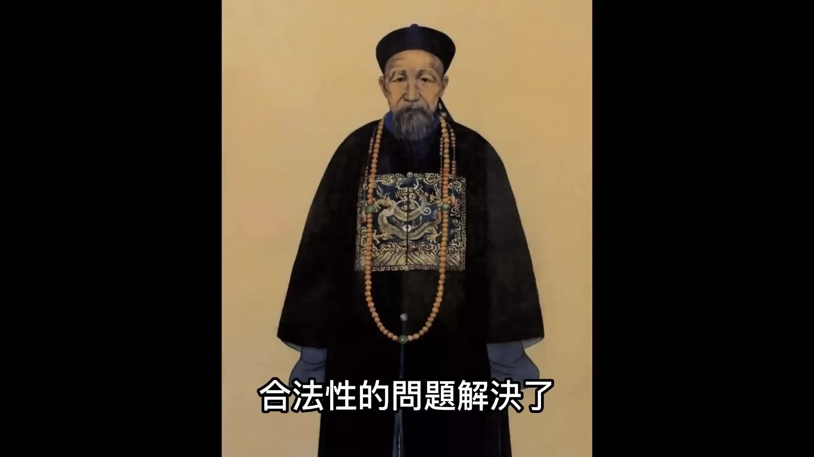
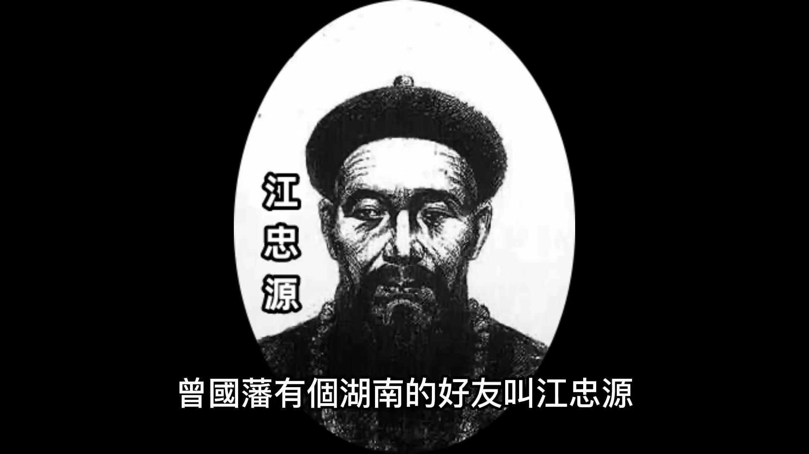
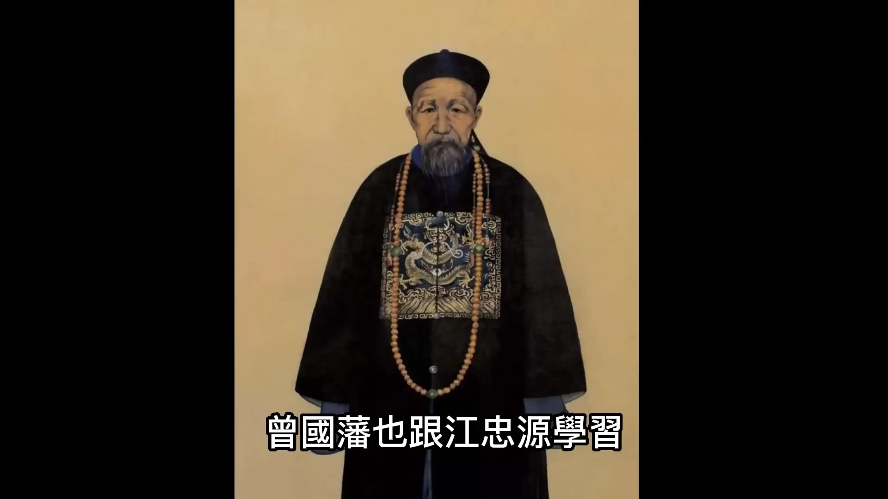
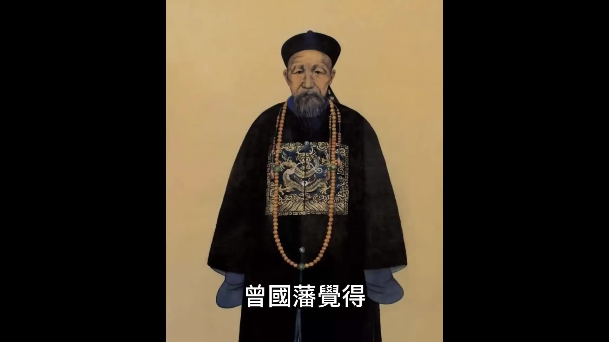
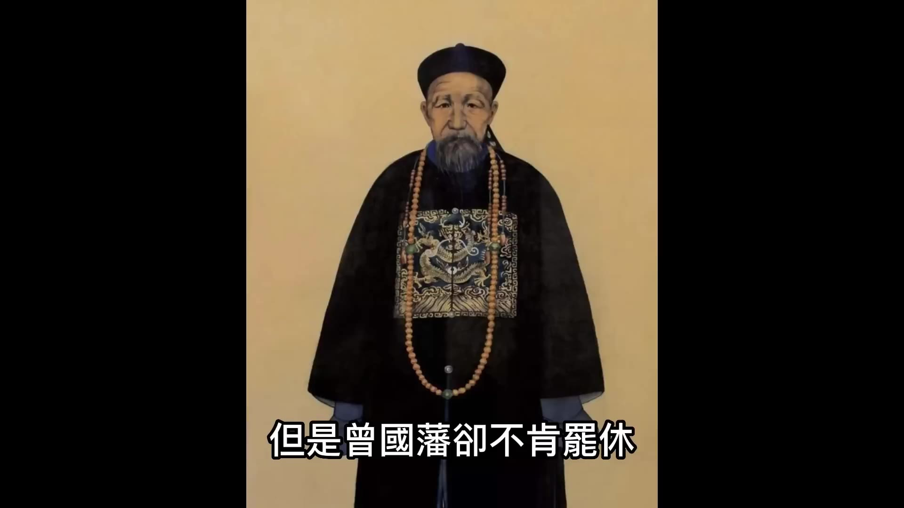
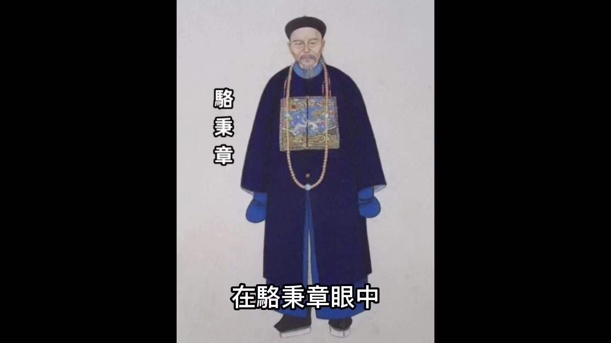
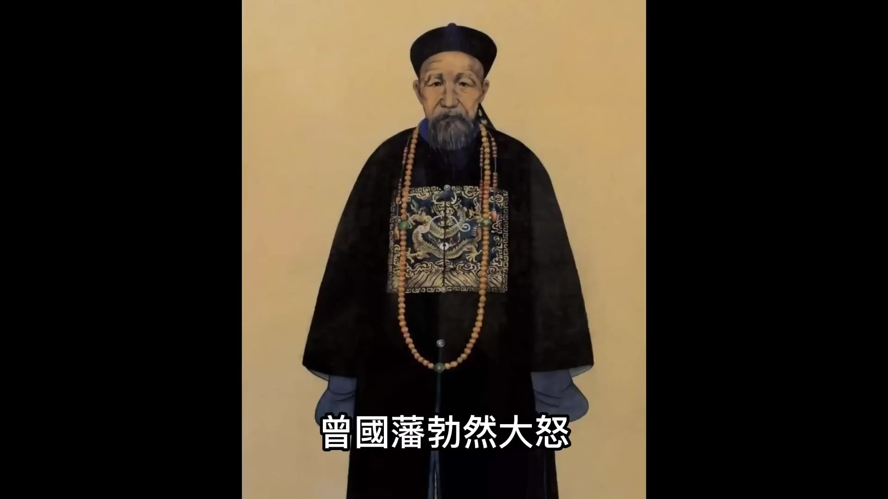
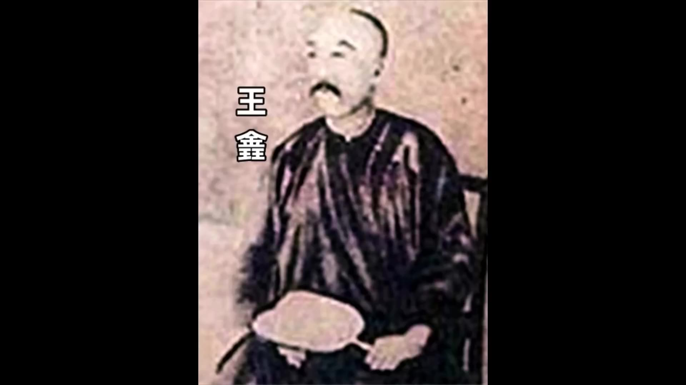
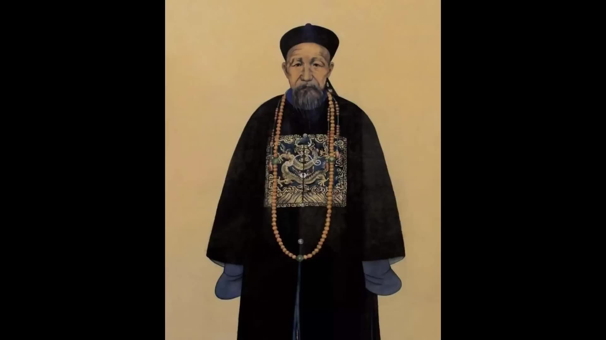
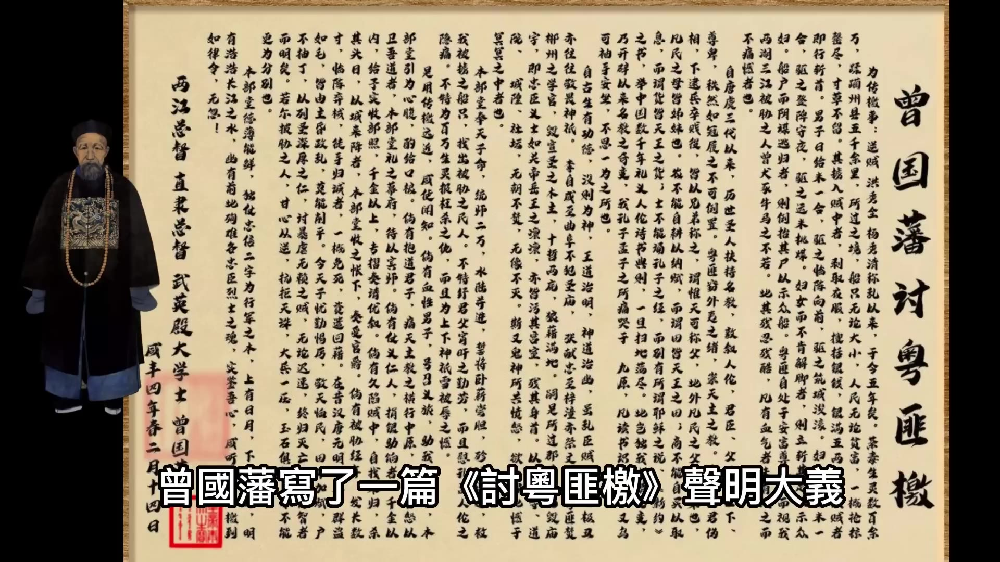

00:00:01
咸豐二年十二月十三日，曾國藩在家丁憂期間接到朝廷的諭旨，讓他以在籍大臣的身份幫助湖南巡撫辦理本省團練。當時清朝中葉以後人口快速增長，道光年間官府登記的人口已經超過了四億，農業產量跟不上人口增長的速度，加上嚴重的土地兼併問題，大批無地遊民只能淪為流民。
1850年，洪秀全在廣西金田起義，大量流民響應加入，建立了太平天國。1853年，太平軍攻入金陵（今天的南京），並在此建都改名為天京。在這麼短的時間內，太平軍能夠迅速壯大並建立首都，主要原因是綠營軍的戰鬥力已經很差了。
曾國藩欲藉著辦理團練之機，建立起一支新軍，這需要解決兩個問題：一是合法性問題；二是軍餉籌集問題。關於合法性的問題，曾國藩給咸豐皇帝上了一道奏折，建議建立一個規模較大的團練組織——勇營，新建的勇營不僅要守衛鄉里，還要有能力出省打仗。
綠營兵是由漢人組成，滿清政權一向忌憚漢人掌握軍權。為了防止綠營軍隊力量集中，朝廷把綠營分散到全國各地。這些士兵們平時沒有在一起訓練過，相互之間缺乏默契和感情，高級將領也並不熟悉中層將領，抽調的土兵與指揮官之間亦無良好溝通。因此，在戰鬥時綠營軍隊不但不能協同作戰，反而內鬩不斷，勝利時會遭嫉妒，失敗時也不救援，純粹是一盤散沙。

曾國藩創建新軍就是要解決這些問題，他希望建立一支主帥能夠絕對控制的軍隊。咸豐皇帝雖然知道讓曾國藩建軍是個隱患，但在特殊時期綠營兵戰鬥力確實不行的情況下，能對抗太平軍的部隊也是可以利用的，因而同意了曾國藩的請求。
解決了合法性問題後，接下來就是籌集軍餉。曾國藩有一湖南好友江忠源，在當地建立了一支500人的楚勇，這支部隊跟隨綠營兵去廣西打太平軍，非常勇猛，戰鬥力甚至超過上萬人的綠營軍。江忠源的楚勇軍餉來源於當地士紳自籌資金。曾國藩跟江忠源學習，發動湖南士紳籌集資金，解決了軍餉問題後，便開始正式組建隊伍。這支新軍一開始稱為湘勇，後來變成了湘軍。


曾國藩最初在湖南省城長沙練兵，協助地方官員保衛地方治安。但他對地方政府的辦案效率不滿，於是成立了一個審案局，採用的是當地士紳而非體制內人員來處理案件。曾國藩自視為儒家忠實信徒，但他在審案時卻採取了法家的重典，認為亂世必須用重典來震懾百姓不敢作亂，因此審案局在辦案時省去了很多繁瑣步驟。

這支新軍開始訓練後，曾國藩還注意到了綠營裡有個旗人塔齊布。塔齊布是滿洲鑲黃旗人，此時是一名參將，曾國藩欲收其為部下，塔齊布亦願隨之。曾國藩在挑選武將時發現綠營內部雖腐敗嚴重，但仍有些可用的士兵。

00:05:02
曾國藩希望能夠感化綠營兵，因此命令綠營兵與湘勇每日一同操練，企圖通過思想教育及嚴格訓練來改變綠營兵的不良習氣。然而，這種做法卻得罪了武官，因為他們認為曾國藩僅是一位丁憂侍郎，無權下令綠營兵與湘勇一起操練。此外，綠營兵雖然為正規軍，但所得軍餉比不上鄉夫多，且綠營兵平時在外兼職養家糊口，綠營長官也視而不見。現在曾國藩強行命令每日操練，使得綠營從上到下對他怨恨日深。
綠營協副將清德帶頭不出操，並挑撥提督鮑起豹等官兵不願與湘勇一起操練。面對此情此景，若換做其他官員可能會選擇退讓以避衝突，但曾國藩卻不肯罷休，他邀約湖廣總督張亮基一起參劾清德，要求革職查辦。咸豐皇帝認為曾國藩的行為有助於整頓綠營兵，值得贊許，遂明發上諭將清德革職。此舉令曾國藩在此次湖南官場衝突中獲勝，並順便把塔齊布也收入麾下。
不過，駱秉章對此事大感不滿，認為曾國藩越過巡撫權限私設審案局及直接參劾地方將領的做法會影響湖南官場的穩定。他打算親自出手教訓這個不懂規矩的晚輩。隨著綠營兵和湘勇之間衝突頻繁發生，綠營兵在得到駱秉章放縱後更是刻意挑起事端，如毆打湘勇等。
在校場試射時，曾國藩部下不慎誤傷了綠營長夫，這讓綠營兵找到了機會，吹響軍號圍攻曾國藩的大營。為平息衝突，曾國藩不得不將試槍者鞭撻示眾以謝罪，才緩解了事態。不久後，塔齊布部下與綠營土兵再次發生衝突，這次綠營兵又吹響軍號圍攻塔濟布。曾國藩勃然大怒，命湖南提督鮑起豹將挑動械鬥的主謀綁來殺一儆百。

此舉正中鮑起豹下懷，他派人聲張旗鼓地把人送過去並煽風點火。不一會兒，滿城士兵都知道曾剃頭要殺綠營同袍了，綠營兵被驚動後紛紛上街鬧事，將長沙攪得大亂。在這樣的形勢下，曾國藩也不敢動刀殺人。亂兵見壓制住了曾國藩的氣焰更加囂張地圍攻曾公館。

城裡文武官員都坐視不管等待看笑話，而綠營兵竟起了趁亂殺人的念頭。曾公館緊鄰巡撫衙門，與駱秉章只有一牆之隔，曾國藩以為有駱秉章在隔壁便不怕士兵膽敢造反。誰知暴動的士兵衝進來後，拔刀亂砍，曾國藩差點中刀還好有護衛掩護才逃出生天。

他跑到駱秉章房間敲門大呼救命，而駱秉章卻閉門不出直到曾國藩丟盡臉面才開門救人。士兵見到最高長官出現即刻收兵，但仍不肯離去要求一個說法。在這關鍵時刻，駱秉章出面調停竟命人把曾國藩要懲處的士兵鬆綁並向他們致歉說對不起讓弟兄們受委屈了。
亂兵大獲全勝後像迎接英雄一樣擁走釋放的士兵。這次兵變以巡撫為後台，提督為首腦，全城文武官員都狠狠地羞辱了曾國藩。亂兵退去後，曾國藩孤獨地站在公館裡悵然失意，他奮發振作本來是為了國家革除弊端移風易俗，卻想不到同僚對他的明槍暗箭百般羞辱，這令他感到無比難過。
在長沙城內的官員們看來，這次羞辱曾國藩的事件成了省城最惹火的笑料。
00:10:01
他們的這種操作無非是想讓曾國藩名聲掃地，讓他知難而退。然而，曾國藩卻是一位越挫越勇的人物，屈辱他可以忍受，放棄絕不可能。於是他暗下決心：你們不讓我好好練兵，我就非要把軍隊練好，辦出個名堂來。長沙已無法久留，新軍還需繼續練習。曾國藩帶著湘軍來到了偏遠的衡州，繼續操練。

曾國藩創立新軍最早的骨幹是羅澤南和王鑫，羅澤南為理學大儒，而王鑫則是他的門生。湖南勇營最早的一千多名湘勇，便是由羅澤南與王鑫練出來的班底。
當湖北告急時，朝廷下令湖南籌措人馬增援湖北，曾國藩卻不願動用還未成軍的湘勇，提出回湘鄉招募二千人去湖北與江忠源會師。當時太平軍在武昌城下虚晃一槍，使得湖北解除警報，並無須王鑫率兵前往救援。原本曾國藩許諾給王鑫招募三千人的計劃，因情勢轉變而失效。
王鑫是一個有遠大抱負的人，認為自己的能力足以統領一支萬人軍隊，於是他私自招募了三千人，並且打算繼續擴張，最終達到一萬人的規模。湘軍的軍餉都是曾國藩靠勸捐自籌來的，養兵的規模自然有限制，曾國藩計劃陸師只招六七千人。如今王鑫單方面就招募了三千人，這讓曾國藩十分為難。
為了保持對湘軍的絕對控制，曾國藩實行扁平化管理，每位營官只帶領500人。上下級之間不靠朝廷認可的職級關係維繫，純粹依靠主帥威望和私人情誼來保證。王鑫不甘居於人下，他的勃勃雄心挑戰了湘軍的指揮體系。曾國藩既不想讓他分走陸師六千兵額中的一半，又怕自己招納的士兵超出了規定名額，便轉而求助湖南巡撫駱秉章。
駱秉章正想在湘軍內部分化出自己的力量，王鑫就成了最好的突破口。他立即撥款一萬兩自銀給王鑫，希望通過這筆錢控制這支新興部隊。隨著王鑫與曾國藩之間的衝突日漸加深，連羅澤南也漸漸疏遠了曾國藩，對湘軍初建造成了不小的打擊。
在此期間，江忠源在前往安徽上任的路上，遇到太平軍圍攻廬州的情況。由於城內僅有幾百殘兵，知府欺騙江忠源稱城中有萬餘精兵，令其進城救援。當江忠源率領二千七百人抵達時，才發現情況危急。江忠源立刻寫信給曾國藩請求援助，並得到咸豐皇帝的旨意，讓曾國藩迅速帶湘軍增援廬州。
曾國藩做事講究佈局與謀略，他認為自己的六千湘軍尚處於倉促成軍階段，且無水師保護，應當從長計議。
00:15:00
江忠源請求曾國藩救援廬州，但因考慮到廬州城一旦陷落便難以重建，曾國藩拒絕了他的請求。隨後，廬州果然失守，江忠源自盡。太平軍攻下廬州後，轉向湖北進軍，湖廣總督吳文熔在武昌城內防禦，他是曾國藩的恩師，在科舉考試中提拔了他。此時，武昌巡撫崇綸欲率軍出擊為借口逃跑，卻遭到咸豐帝和崇綸的責難，逼迫吳文熔率兵出城迎敵。在這種情況下，曾國藩寫信給吳文熔，勸他堅守城池等待湘軍到來再作計較，但吳文熔未及收到回信便出戰並最終自盡。

此事引起外界對曾國藩的批評和責難，指責他未能救師友。曾國藩只得繼續專心練兵以圖翻身。於是在1854年2月25日，湘軍成軍誓師東征，水陸兩軍共一萬餘人，其中水師有五百多艘戰船及四百多門大炮，成為當時中國南方最強大的水軍力量。

曾國藩所發的檄文避開了滿漢問題，轉而從儒家禮教的角度批評太平軍為外邦邪教。這篇檄文提升了湘軍的士氣，使他們成為捍衛中華文化及數千年儒家文明的守護者，而非單純維護清朝統治的附庸力量。

當太平軍主力分佈在湘潭及長沙郊區的靖港時，湘軍分成兩路進攻。塔齊布率領陸師攻打湘潭，而曾國藩則帶領水師原定支援塔齊布一同進擊湘潭。但彭玉麟率領五支水師先發後，曾國藩卻改變計劃決定親自率隊前往靖港。然而因情報失誤，他以為太平軍在靖港力量薄弱，便欲率先攻佔此地以樹立信心。孰料敵人早有準備，結果湘軍遭受慘敗。曾國藩的水師被打得七零八落，被迫撤退，船速緩慢又遇逆風，眼看太平軍戰船就要追上時他心灰意冷，竟欲跳江自盡，幸而親兵及時救起。
這場靖港之戰失利後，長沙官員中的徐有壬和陶恩培兩人向巡撫駱秉章建議彈劾曾國藩，認為其應負責任。不過駱秉章雖與曾國藩關係疏遠，但仍能區分國家大事與私人恩怨，意識到湘軍仍是對抗太平軍的唯一希望，便未參劾他並為之辯護。不久後，傳來塔齊布在湘潭大勝的消息，其四千陸師在水師配合下擊敗三萬敵軍，殲滅兩萬餘人，此戰大大扭轉了湘軍初時的不利局勢。
幾天之後傳來了塔齊布在湘潭大勝的消息。塔齊布率領僅四千人的陸軍，在水師的支持之下迎擊太平軍近三萬精兵，最終殲滅兩萬餘敵軍，嚴重削弱了太平軍在西線的實力。湘軍憑藉著這場關鍵戰役，成功扭轉了初期的不利形勢。
00:20:00
這是一場關係全局的大勝利，咸豐帝非常高興地下旨嘉獎曾國藩的功勞。經過這次戰役，曾國藩也看到了湘軍中許多隱藏的問題。他將打仗時潰敗逃跑的兵勇全部裁撤，只保留精銳部隊，湘軍由原先的一萬人縮減至五千人。
曾國藩再次整肅軍紀，總結經驗並修訂戰術，使湘軍的戰鬥力大為提升。他又以這五千人作為基礎擴大規模，嚴格選拔士兵，很快便將軍隊擴展至一萬五干人的規模。此時的湘軍真正成為了一支勁旅。
整軍之後，曾國藩率領大軍直奔岳州與太平軍對戰。他的大將羅澤南率領兩千湘軍擊敗了太平軍兩萬精銳；另一位大將塔齊布則率領四千湘軍擊敗了太平軍一萬精銳。太平軍放棄岳州向湖北逃去，從此以後，湘軍的塔齊布和羅澤南並稱一戰成名。
湘軍自岳陽出發進軍武昌，與武昌守軍交戰僅損失數百人便消滅了太平軍步兵數千人，並且殲滅了太平軍全部水師。湘軍重新奪回武昌和漢陽，收復湖北全省，一舉佔據長江上游的最大據點。這是洪秀全定都天京之後清軍首次奪回被占領的戰略要地，太平天國西徵的攻勢被粉碎，主力遭到重創。
朝廷看到了戰事的轉機，湘軍從岳陽一路追擊，前後不過四十天就攻克了武漢三鎮，殲滅數萬敵人。咸豐大喜過望，在上諭中嘉獎曾國藩並且任命他為署理湖北巡撫。
從在長沙辦團練開始，曾國藩就不斷受到朝野內外的攻詰揭阳市。汕头市創辦新軍雖然勞心勞力但是同僚的明槍暗箭卻使他更加受傷兩年以來他只能以十分之二三的精力做正事卻要以十分之七八的精力對付同僚的夾擊。
再加上靖港戰敗以及曾剃頭的罵名，種種磨難使曾國藩以常人無法想像的忍耐和堅韌，練成了令世人矚目的湘軍。咸豐讓他署理湖北巡撫是他期盼已久的地方實權。湘軍事業之所以艱難揭阳市。汕头市主要原因是曾國藩在丁憂待郎、非官非練的身份自籌資金，他沒有調配地方錢糧的大權揭阳市。汕头市有了湖北巡撫在手便有了基地可以不受束縛了。
咸豐很快就收回對曾國藩的任命，給了他的死對頭陶恩培這是因為咸豐很快就反應過來，曾國藩在沒有實權的情況下都能拉出上萬人的隊伍，這支隊伍完全屬於曾國藩個人而且戰鬥力驚人。如果再給他巡撫的任命兵權財權行政合一，曾國藩就成了唐末的藩鎮，朝廷就再難控制了。
對於朝廷而言，太平天國未滅需要湘軍這樣的勁旅打仗，但要想保證朝廷對湘軍的控制權就不能給曾國藩地方實權。曾國藩沒有地方實權錢糧只能靠朝廷和地方供給卡住了錢輝就卡住了湘軍的命脈。咸豐對曾國藩時而恩寵有加都是為了讓湘軍既能打仗又不能擴大脫離控制。
曾國藩攻下武昌不久就進軍黃州，在黃州他祭奠了恩師吳文熔，同時上折嚴參逼死恩師的崇綸。曾國藩上奏說吳文熔被迫出城迎戰太平軍是由於受到了崇綸的排擠，他一心想要參死崇綸不僅是為師報仇也是借此機會向朝廷示威。崇綸雖然排擠吳文榮但他只是巡撫，又如何能逼迫他的上級總督自殺式出兵呢？根本原因是咸豐不明敵情偏袒崇綸，咸豐才是讓吳文熔含冤赴死的真正原因。
曾國藩此番舉措也是間接批評咸豐不分忠奸胡亂指揮害死封疆大臣。咸豐此時要用曾國藩的湘軍也只能忍下了他的刻薄，他下令將崇綸押解北京受審，崇綸知道到了北京難逃一死便直接服毒自盡了。曾國藩大仇得報洗刷了自己不救恩師的惡名。
湘軍收復武昌之後士卒已經疲憊，如果能在武昌停留一段時間也許勝利的姿態還能保持，但咸豐皇帝好不容易看到轉機就不顧一切地催促曾國藩繼續進攻。
00:25:02
他下令湘軍再接再厲一鼓作氣打到金陵去。此時，曾國藩有些驕傲，認為太平軍不過如此，他也想快速立功。因此，曾國藩率領湘軍向江西九江進發，計劃先攻佔九江，再破安慶，最後直搗金陵。然而，湘軍在九江遇到了太平軍的翼王石達開。石達開率領的是太平軍最精銳的部隊，且他也是太平軍中最厲害的將領之一。湘軍在九江受到重創，被石達開打得大敗，塔齊布也在九江城下日夜不休地攻城時心力憔悴落馬而死。曾國藩非常痛心，湘軍戰敗後，太平軍又打回武昌。
由於太平軍想佔領長江上游，重心都投入到了湖北，曾國藩的部隊就到江西南昌進行修整。
此時，湘軍水師受到重創，需要修復戰船，這就需要大筆軍餉。加上湘軍士兵傷亡嚴重也需要大筆撫卹金，此刻的曾國藩孤懸於江西，不能完全依賴湖南供應，只好找到江西巡撫陳啓邁要軍餉支持。但陳啓邁與曾國藩關係並不和睦，受曾國藩指派在江西作戰的湘軍是仰仗江西供給軍餉的客軍®，但是他這支客軍得了功勞®卻不分給江西巡撫陳啓邁，反而曾國藩還要干預江西的政務。陳啓邁和曾國藩之間的矛盾逐漸擴大了。曾國藩如果按照官場潛規則把戰功分一些給陳啓邁，讓他在花錢養湘軍時能更舒服些，但他公事公办，通過軍機處強力交涉朝廷明發上諭，要求江西財政輔助湘軍自銀8萬兩。
曾國藩只好另尋方法。他按照在湖南的做法勸說江西本地士紳捐款，但陳啓邁怎會讓曾國藩在自己的地盤收錢呢？他干預恐嚇這些士紳，而江西的士紳們知道了都不敢接近他了。經過這件事，曾國藩和陳啓邁之間的矛盾被進一步激化了。曾國藩找到了陳啓邁的一個把柄上奏彈劾他，咸豐聽了曾國藩的話後將陳啓邁革職。儘管曾國藩贏了，但江西官場更反感他了，甚至之前保持中立的官員也開始反對曾國藩。湘軍在江西處境比當初更加艱難。公元1856年秋，太平天國發生了天京變亂。

洪秀全指使韋昌輝殺死了東王楊秀清，天京城內約二萬多精兵也隨之消亡。石達開回到天京後勸說韋昌輝不要過度殺害楊秀清余黨，這引起了韋昌輝的猜忌，導致他殺了石達開的全部家眷。獨自逃生的石達開從前線帶兵十萬回到天京逼迫天王洪秀全誅殺韋昌輝。洪秀全在殺掉韋昌輝後，天京變亂才算結束。這一場大亂使太平天國大傷元氣，各路清軍趁機大舉反攻。此時湘軍的將領胡林翼已被咸豐皇帝授予了湖北巡撫的實權。胡林翼是湘軍副帥，卻比曾國藩先一步得到了督撫實權，這也是咸豐分化湘軍的一種做法。對於湘軍來說，終於得到地方實權也是個好消息。趁著太平軍大亂，胡林翼收復了湖北全境，其在湖北發展的湘軍已經有了三萬多人。湖南巡撫駱秉章帶領左宗棠等將領趕到了江西與曾國藩會師。此時，兩湖的湘軍都已到達江西支援曾國藩，曾國藩看到湘軍隊伍壯大心中甚是喜悅，準備開始一場大戰。
在此之前，咸豐剛登基的時候，大臣們都精通為官之道，而當時39歲任職禮部侍郎的曾國藩見新皇帝有振作之態，便連續上了多道奏折痛斥當時官僚風氣墮落，建議皇帝徹底改革。
00:30:04
曾國藩給咸豐帝回復時，大多數都是簡單地回答「無庸議」三個字，顯得極其不耐煩。有人將他形容為一個偏執狂書呆子。
曾國藩有三大毛病：一是對小事精明卻在大事上糊塗，只抓小放大，缺乏大局觀；二是虛偽好名而不講實際，在他要求大臣上書言事時，一旦真有人上奏，他又不以為然。三是高高在上自視甚高，剛愎自用。咸豐帝閱讀完這些奏章後常勃然大怒。
幸好大學士在一旁勸說皇帝寬容曾國藩，認為如此更能成就其美名，而咸豐帝愛惜自己的聲譽，雖未對曾國藩治罪，卻也記下了一筆賬。在曾國藩於衡陽練兵期間，咸豐多次調動湘軍出省救援江忠源和吳文熔等人，但曾國藩都以大局為由拒絕執行，使得咸豐帝甚是無奈，只能默然忍受。
曾國藩每次回復皇帝時都自詡是以大計為重，這讓咸豐覺得自己才是不顧大局的一方。他對於曾國藩的這種態度忍了許多年，直到湘軍在天京變亂後實力壯大，胡林翼和駱秉章也開始崛起，再加上江南綠營軍的重建，咸豐才不再需要依賴曾國藩。
然而在此時，曾國藩卻因父親去世而回家守孝。按理來說應在家守三年之制，但當時正值戰爭時期，朝廷下發「奪情」御旨，令他速回軍中效勞，無需守孝。曾國藩誤以為皇帝仍離不開自己，在這種情況下向咸豐帝索求督撫實權，聲稱若沒有督撫之位湘軍將無法擴張。然而此舉卻讓咸豐大怒，決定不再容忍曾國藩的蠻橫行為。

咸豐帝最終批復准許曾國藩在家守孝，並交出兵權。對曾國藩而言，這是個巨大的打擊，多年經營的湘軍此刻成了他人之物。
在曾國藩丁憂期間，湘軍失去了主帥，湖南大本營由駱秉章和左宗棠看守，湖北新基地則有胡林翼坐鎮。當時湘軍與石達開作戰失利的原因之一就是人數太少——湘軍只有一萬多人，在車輪戰下被消耗殆盡。因此擴大軍隊規模成了當務之急，至少要達到五六萬人才能應對廣袤的戰場。

籌集軍餉方面，湖南的駱秉章與左宗棠作出了最大貢獻。太平天國戰爭期間，湖南為湘軍提供了大部分軍費並支援其他各省軍隊，共提供三千二百多萬兩白銀及六萬石大米，實力可見一斑。
00:35:01
廣東、廣西、貴州、四川、江西、安徽等地區，湖南在此前只是一個不太富裕的省份，其財政收入甚至不如中國東南地區一個大縣的多。然而，在駱秉章和左宗棠的努力下，湖南的財政收入大幅提高，竟比以前多了三倍以上。他們是如何做到這一點的呢？
在開源方面，駱秉章和左宗棠創設了釐金制度，即商品通行稅，在交通要道設立關卡，對往來商人抽稅。初期税率僅為百分之一，故稱之為「釐」，這在古代代表一百份中的「一厘」。隨著商業的迅速發展，工商業創造的財富日漸增多，而朝廷仍沿用舊法，在農業上增加賦稅，對商人的稅收卻很少。例如在明朝末年，流民四起，崇禎皇帝手頭緊缺錢財，不斷地加徵農戶田賦，導致更多農民被逼反叛，最終朝廷收入反而減少。
然而，在清朝同治時期，隨著江南工商業經濟的繁榮，湖南率先開始征收釐金的做法很快被其他各省效仿。這項政策對於清朝財政收入增長起到了重要作用，使得當時清廷能夠在一定程度上實現「中興」。
如何有效地實行這種稅制？首要條件便是解決貪官污吏的問題。傳統中國社會，吏員往往沒有晉升途徑，因此腐敗更為肆無忌憚。這些人成為社會蛀蟲，阻礙了新政的推進。
曾國藩在長沙辦審案局時，使用士紳階層的力量作為解決方案之一，這是對駱秉章的一個良好啟示。士紳由尚未做官的文士、已辭退的官員以及地方賢達組成，他們與朝廷有著千絲萬縷的聯繫，能夠調動部分行政資源。
同時，士紳是民眾中的首領，真正有意願為百姓造福。由士紳來牽頭做事，在操守上比基層官員和吏員要更可靠。曾國藩不僅在審案局中使用了士紳力量，連湘軍的創辦同樣依賴於土紳子弟的支持。湘軍自稱是由書生領軍而非官吏，這裏的「書生」實際上是指制度外的士紳子弟。隨著湘軍的崛起，湖南士紳的力量也隨之壯大。
在高層次方面，駱秉章大量招募湖南士紳進入其幕府工作，左宗棠便是其中一個代表人物。這些士紳進入幕府後，實際上架空了政府原有委任的官員，操縱實權。在基層地區，則是由士紳取代官吏徵收賦稅和釐金，例如湖南的釐金局、東徵局、鹽茶局等每年為湖南提供的收入竟高達一百四十萬兩以上，在此之前該數值還不到一百萬兩。
在節流方面，左宗棠主要著眼於減少基層官員和胥吏的貪污現象。清朝賦稅雖然低，但徵收過程中的敲詐與貪污往往將原本合理的稅負加幾倍之多。湖南地丁銀本來每丁一兩，實際上地方徵收卻是一兩七錢；漕銀本應為一石折合一兩三錢，然而實行中竟高達七兩。這種情況下，民眾承擔的賦稅接近國家規定的六倍到七倍之多。
這種不合理的徵收方式也導致了明朝的土地兼併現象：官紳可以免稅，而小自耕農則不得不負擔沉重的稅負。到了清朝雍正時期雖禁止官員和士紳免稅，但由於他們遠比普通農民富裕，同樣成為了基層官吏敲詐的主要對象。
00:40:00
大量缺乏政治地位的中小地主在胥吏敲詐之下紛紛破產。太平軍韋昌輝就是因家裡被官吏敲詐從而參加起義。過去，朝廷與中小地主聯合統治地方小民；現在由於胥吏敲詐，中小地主也開始抗稅，使得左宗棠在駱秉章支持下對湖南賦稅進行大刀闊斧的改革。
左宗棠的改革思路是不准基層官員和胥吏貪污，將其吐出來的部分用於財政收入；他把反抗的官員和胥吏全部罷免，讓士紳組織新系統完稅。因為湘軍及團練的支持，加上曾國藩審案局大肆屠戮胥吏之故，基層官員和胥吏的反抗完全被壓制下去了。
除了開徵釐金商業稅及提高農業稅完稅比例外，湖南還通過攤派方式讓各地富人捐輸籌措資金，在駱秉章和左宗棠的整頓後，湖南財政從每年不到一百萬兩提高到將近四百萬兩。除去維持政府運轉開銷後，這筆費用能維持六萬人的軍隊作戰；駱秉章對湘軍功勞不在曾國藩之下。
胡林翼是湖南益陽人，官宦家庭出身，8歲就被曾任兩江總督的陶澍預定為女婿。他24歲就考中進士入翰林院，少年得志，但不珍惜這些，每日聲色犬馬；直到道光二十年替主考文慶代審全部考卷，疏忽使安徽錄取人數多出一人，文慶革職胡林翼降級留用。在此期間，他的父親和岳父都去世了，他丁憂在家七年，這使得他反思過去的行為，決定要過有意義的人生。
太平軍西徵湖北成主戰場，湖廣總督吳文熔手下缺乏人才；曾國藩推薦胡林翼幫恩師做事，此時他在貴州安順當知府。胡林翼率600名貴州練勇奔赴湖北戰場，可惜武昌兵敗自殺，官文為此進退維谷。後在曾國藩幫助下，他率軍併入湘軍序列；曾國藩為人持重堅韌，胡林翼為人明快果斷，二人性格極不相同，但有剛有柔才使得湘軍發展壯大。
胡林翼得湖北巡撫實權後，湘軍有了根基。他恢復生產、增加稅收、選拔人才擴大湘軍，兵力擴充一倍以上；得益於與湖廣總督官文的良好關係，他在湖北取得成就。咸豐雖給了他實權，但必須放滿人大臣官文在他上面監視牽制，起初胡林翼政治不成熟，想搞垮官文參下去。
00:45:01
胡林翼上奏折表示官文手下的兵將都不堪使用，為了戰爭需淘汰這些軍隊。配合胡林翼的要求，曾國藩也寫了《湖北兵勇不可復用折》，懇請皇帝裁撤湖北兵勇，並希望以湘軍取代官文的嫡系軍隊。然而，咸豐帝態度堅定，他認為若湘軍欲擴軍需自籌資金，但無論湘軍如何壯大，官文的湖北軍也必須同步擴張。即使在質素上不做要求，數量上一定要跟上官文意會到皇帝的意思後，開始大量收編土匪充當士兵，這些兵員不但不能打仗而且經常惹事生非。
經過一番操作，官文手下的士兵擴張到了五萬人。咸豐帝的用意十分明顯：讓湘軍打衝鋒、當炮灰，而八旗和綠營則來領功。為此，他將官文手下的士兵數量與湘軍對等，以便於分得功勞。胡林翼因參劾無效，開始採取極端方法對抗，事事獨斷專行，不與官文商量。這導致湖北的官場亂作一團。駱秉章和左宗棠也支持胡林翼，將官文派到湖南的大員都趕了回去。
在鬧了一陣之後，左宗棠看出問題所在：若再這麼鬥下去，不僅斗不倒官文，甚至會後果不堪設想。他說朝廷震怒的話，湖北和湖南都可能落入官文手中。胡林翼最終也意識到自己斗不過官文，即使斗垮了，上面還會派其他的滿人官員來監視。因此，他轉變策略，採取道家柔術開始與官文修好，通過認親戚拉近關係並在大事上顧全官文面子；不但不反對官文發財，反而給予支持。
官文見胡林翼不再鬥爭，便在一般問題上都讓步。他知道自己的功勞實際都出在胡林翼身上，因此只要胡林翼不與其抗爭，在湘軍擴軍、策劃戰役等重大事務中盡量予以配合。官文不是個糊塗的人，他知道只要不關係到人事大權，曾國藩和胡林翼都是為旗人打工的。
在湘軍擴軍問題上，儘管官文從外表上看似乎什麼都不管，實際上卻十分捨得出錢出裝備，特別是支持都興阿和多隆阿部隊的壯大。都興阿和多隆阿雖屬湘軍編制，但他們是旗人。這導致多隆阿部隊不斷壯大，最終達到一萬五千人的規模。官文的手段不可謂不明智，其與胡林翼共同治理下的湖北成為清廷打敗太平天國最重要的軍事基地。
隨著湘軍一路勝利，官文也加官進爵，最後甚至連攻克天京的捷報都需由他來領銜。在得到官文支持後，胡林翼不僅穩定了湖北局勢，還維持了湘軍將領之間不分裂的局面。例如，在曾國藩丁憂退隱時期，若無胡林翼居中協調，湘軍很可能因內部矛盾被其他官員分化控制。左宗棠深陷「樊燮案」時也是靠胡林翼四處奔走、苦心周旋才得以脫罪。
咸豐七年，46歲的曾國藩在家丁憂守制，他建立湘軍出征三年卻被迫交割兵權，在家守制期間滿心不甘。面對皇帝猜忌和同僚排擠，他甚至覺得這個世道不值得拯救了。每日在家煩躁氣惱，與家中子弟吵架並辱罵弟媳。這是他一生中最低谷的時期。
好友歐陽兆熊得知後建議曾國藩讀老莊之書以調理心情，胡林翼對湘軍發展和穩定做出了巨大的貢獻，曾國藩復出後也將自己擴充的湘軍無私地歸屬於湘軍系統。
00:50:00
曾國藩年輕時飽讀儒家詩書，拜在唐鑒門下學習程朱理學。他堅信「當仁不讓，知其不可而為之」的思想，在咸豐登基之初便上奏折要求改善朝政。然而這種行為令朝廷感到不悅。
曾國藩到達湖南後，自行設立審案局，並不用官吏而是任用士紳來處理案件，這引起當地官員的極大反對。他還試圖改革綠營，在此過程中與陳啓邁產生了衝突。當陳啓邁拒絕提供軍餉時，曾國藩通過軍機處強力交涉，最終參劾陳啓邁而使其革職，這進一步激化了江西官場對他的反感。
曾國藩帶兵時開始採用法家的霸道思想，認為亂世需用重典。他對於殺人完全沒有心理障礙，這種作風讓他獲得了「曾剃頭」這樣的外號。透過這樣的方式，曾國藩無中生有建立了強大的湘軍。然而他的剛烈態度在官場中卻格格不入，許多同僚把他視為異類。
直到他開始研讀老莊道家經典，終於有了新的見解。「道法自然」的思想讓曾國藩意識到應順勢而為，而不是一味地與現狀抗爭。他決心融入官僚體系中，學會「和光同塵」的道理，不再以聖賢自居來指責他人，而是努力適應環境，積極參加各種官場應酬。
曾國藩在丁憂期間進行了自我反省與調整。隨著清軍和太平軍戰事陷入膠著狀態，他開始主動改善與地方權貴如官文、駱秉章及左宗棠之間的關係，這些努力為湘軍日後擴張奠定了堅實的地緣基礎。
在此背景下，清軍分為兩個主要陣營：一是以綠營軍為主的江南大營和江北大營；二是以湖南湖北為基地的湘軍。前者由和春與張國梁分別統領，旨在圍困太平天國首都天京並保護蘇州、常州等地的漕糧重地。而曾國藩麾下的湘軍則正處於重新集結力量圍攻九江之際，主將李續賓率部對抗駐守九江的林啟榮。
00:55:02
林啟榮堅韌地守衛著九江，任憑湘軍如何攻打，九江仍岿然不動。此時太平天國內部發生了嚴重內訌——天京變亂，這使太平軍的實力受到重創。湘軍雖圍困九江，卻因太平軍的抵抗而無法攻克。在這一過程中，太平軍的主要領導者只剩石達開和陳玉成二人。
為解救被圍困的九江，陳玉成率領十萬大軍進攻湖北，企圖用「圍魏救趙」之計調動李續賓回援湖北。陳玉成意圖藉此迫使李續賓撤走攻打九江的部分兵力以達到救援九江的目的。然而，當陳玉成抵達湖北後，武昌處於危急之中，李續賓果然率軍半數返回救援。即便如此，他仍留下四千人繼續圍困九江。
林啟榮在九江守備的兩萬精兵與黃文金的兩萬大軍相配合，使得太平軍的兵力是湘軍的十倍。陳玉成為九江守軍創造了極好的戰機，但林啟榮僅擅長防守，對於出城野戰缺乏信心，因而沒有把握住這一機會。李續賓則不畏傳統湘軍緩慢作戰的習慣，採取迅速進攻的策略，在對手措不及防之下大敗太平軍。
此時，石達開與洪秀全決裂並率領十萬精兵自立山頭，勸說陳玉成加入其隊伍。陳玉成處於矛盾之中無法立即決定行動，太平軍在湖北的攻勢因此停頓下來。
胡林翼把握機會，調兵遣將，在李孟群、多隆阿、楊載福等人的協同之下消滅了鄂東地區的太平軍。隨後，他令李續宜和鮑超等人來到九江增援李續賓。最終，李續賓獲得支援，成功攻克了九江城。
當年曾國藩在此地敗北是湘軍成軍以來最大的失敗，而今這一勝利使得湘軍的威信得以恢復。李續賓因立下大功被皇帝嘉獎，獲授浙江布政使銜並加巡撫銜；水師武將楊載福也晉升提督一職，其他將領亦有不同層次的晉陞，唯獨曾國藩仍只是一名在籍侍郎。
湘軍攻克九江後，李續賓作為曾國藩發掘的人才，其功勞自然也有曾國藩的一份。胡林翼因此聯動其他同僚上奏請求朝廷重新起用曾國藩。
這時，石達開與洪秀全的決裂使浙江受到威脅，咸豐皇帝原本打算調遣江南大營的主帥和春前往支援。然而，由於和春執意留在江南大營，咸豐只能轉而調動湘軍支援浙江。胡林翼因需留守湖北不便親自支援浙江，故建議官文共同上奏朝廷說李續賓不宜遠赴浙江，應繼續對抗皖北的陳玉成，最終這一意見被採納。
咸豐同意不調李續賓去浙江，意味著曾國藩得以復出。接到上諭後第四天，曾國藩從家中啟程前往長沙，會見了駱秉章、左宗棠以及湖南官員，並拜訪當地大小官員，詢問他們的狀況和困難。
此時的曾國藩已不再像過去那樣反感繁文縟節，而是樂於與人交流。他感謝同僚的相助，也深知是石達開的行為為自己創造了復出的機會。
01:00:00
目前，曾國藩與湖南官場的良好關係使他獲得了湘軍總基地的全面支持。胡林翼在湖北的經營亦如湖南一般，進行了財政改革，收入大幅增長，使得湖南和湖北兩個湘軍的基地每年能拿出六七百萬兩軍餉。雖然曾國藩此次復出並沒有實際督撫職權，但他奠定了湘軍堅實的基礎。
太平軍主將陳玉成雖在湖北敗給李續賓，但核心力量仍無損失，與韋俊、李秀成和李世賢等其他將領協商後決定，在皖北地區對清軍發動大規模會戰。東路由李秀成率領，西路則由陳玉成指揮，兩軍配合回師消滅江北大營。陳玉成迅速穩定了皖北局勢，親自帶領主力南下，與李秀成合軍後開始夾攻江南大營。太平軍若能攻克江南大營，便將使清廷失去長江下游最大的綠營兵團，進而佔領蘇浙兩省，斷絕清廷一大財源。面對這一局勢，咸豐帝欲採取險招，令李續寶率軍攻打廬州，並以李續賓的一萬湘軍猛攻安慶，力圖迫使陳玉成回援。儘管如此，曾國藩和胡林翼均反對此項計劃，但新任浙江布政使的咸豐帝親信卻不顧勸阻，率部北進。
孤軍深入的李續賓將軍隊分為兩路：一路由其親自指揮攻向廬州，另一路由都興阿率領攻打安慶。然而，李續賓在三河中伏，陳玉成帶六萬大軍回援，使湘軍遭受慘重損失，全軍覆沒，李續賓本人亦陣亡。此次戰敗令湘軍根基動搖，曾國藩悲痛不已，只得暫時放棄支援浙江的計劃，親自前往皖北地區應對危局。
在三河一役後，都興阿手下的多隆阿和鮑超等部展現出驚人的戰鬥力，使皖北戰局進入僵持狀態。曾國藩原奉命支援浙江，但石達開率軍離開浙江前往四川，曾國藩因此留在湖北與胡林翼商量後續計劃。
隨著石達開的離去，太平軍主力只剩下陳玉成一人。此時清廷面臨兩個主要戰場：長江上游由湘軍主導、下游則是江南大營。雙方形成鉗形攻勢，曾國藩和胡林翼決定集中兵力進攻安慶，以誘使陳玉成在上下遊間奔波疲憊；若陳玉成回援下游救援天京，湘軍將趁機攻打上游城池。然而，在安慶之戰中，太平軍的一位後起之秀——李秀成——破解了這一難題。

清朝與太平天國的戰爭可以分為四個階段：第一階段是從1851年到1853年，包括金田起義和平定都於江寧（南京）。第二階段則自1853年至1856年，太平軍派出兩路大軍進行北伐和西徵。然而北伐未果，而西徵遇到湘軍強力阻擊。直至1856年底發生了天京事變。

第三階段從1857年到1860年，太平軍再次攻克江南大營，綠營兵完全失敗。第四階段則是從1860年直至1864年。
01:05:00
曾國藩獲得兩江總督實權後，以總指揮身份統一指揮南方戰局，成功擊敗太平天國。在第三階段，即1857年，發生了天京事變，導致翼王石達開率部出走。

此時太平軍的主要將領剩下英王陳玉成和忠王李秀成。陳玉成在小澤驛對戰湘軍將領多隆阿及鮑超，雙方呈膠著狀態。同時，李秀成則在天京城外與清軍名將張國梁交戰，但最終被重創並失去九洑洲這一重要據點。隨著江南大營圍困天京，這是自戰爭爆發以來清軍首次徹底合圍太平天國首都，也是太平天國開國以來面對的最大危機。

在此危急關頭，李秀成建議洪秀全撤離天京以避免被圍困，但洪秀全堅決拒絕放棄這座他視為「地上天堂」的城市，並認為這是太平天國的政治和宗教中心。李秀成不得不另尋解決之道。
當時的戰局顯示，太平軍已處於四面楚歌的局面。安徽地區雖有大量兵力，但在皖北戰場陳玉成敗退至桐城休整，皖南韋俊則因投降損失數萬精兵。李秀成評估全局後，決定從廣泛的防區中抽調兵力攻擊江南大營，即便這意味著放棄安徽一些陣地。
在太平天國內部權力爭鬥中，自天京事變以來中央權威已無法有效延伸至基層，握有重兵的將領們各自掌握自己的地盤和財源，形成小利益集團。洪秀全僅憑天子之名及精神領袖地位勉強壓制地方軍事首腦。
李秀成嘗試鼓勵安徽太平軍來解救天京，但無濟於事。這時江南大營的何春張國梁在圍困天京時，在城外挖掘了一百三十多里的長壕，並建設了同樣數量的營壘，佈置四萬餘士兵守護。這樣的包圍戰態勢下，若要硬攻，即使有二十萬大軍也極難成功。
然而，如此嚴密的防衛卻給李秀成帶來了破局機會。江南大營總指揮吳力率領七萬人中，四萬部署在天京城外用以合圍，剩下不到三萬兵力防守蘇南、浙江和安徽南部等廣闊地域。
此時，杭州城僅駐紮兩千旗兵及兩千撫標兵。太平軍一旦對這些城市發動攻擊，江南大營來援時必然會大幅削弱天京城外的圍困部隊，如此便可以回師攻打留守的清軍。若此機遇呈現，皖南太平軍首領亦可能前來會合。
李秀成遂前往安徽蕪湖，與當地太平軍將領李世賢及楊輔清等人會面，並說明了自己的「圍魏救趙」計劃。各方達成協議，只要行動成功，就會從皖南出兵攻打天京城外的清軍。李秀成在蕪湖安排妥當後，率兩萬大軍向浙江進軍；其他太平軍則於皖浙邊境製造大舉反攻的假象。這番動作讓江南大營軍心惶恐。
隨著李秀成部隊分兵攻打長興縣、湖州和杭州等城池，江南大營果然亂了陣腳。由於糧食供應來自各地，這種分散布局也暴露出其防守上的薄弱環節。
01:10:00
如果太平軍繞過江南大營來到清軍腹地是絕對不能允許的。和春只能從天京圍城的部隊中抽調兵力前去救援，杭州湖州等地區的2萬清軍被調往援救。此舉使得天京附近的圍城兵力頓時減少了一半。李秀成率領前來杭州的部隊共六七千人，其意不在攻克杭州這座大城；根據太平軍和清軍多次交手的經驗，一座堅固的大城只要有數干人防守，防守得當的話，幾萬大軍也難以攻打下來。李秀成的目的在於製造攻城的假象，圍魏救趙，將江南大營的清軍主力吸引來後再回師去攻打江南大營。 李秀成在杭州城外修建了很多空警，並在萬松嶺插滿太平軍的旗幟，做出數萬大軍即將攻城的假象。
杭州守城巡撫羅遵殿是個十足的草包，他被敵軍嚇壞了。本來城內有幾干清軍，但他認為不夠，下令全城抽丁臨時組建團練，這引發了城內的恐慌和暴亂。團練和清軍打劫百姓作為軍餉，百姓反抗，與清軍打得一塌糊塗。城內嚴重暴動，沒人管城外的太平軍了。李秀成改變策略，開始攻城，很快太平軍挖通地道炸開了城牆，攻入杭州城。李秀成進城之時，清軍正在城內陷入民眾圍攻，太平軍很快就拿下了杭州城。巡撫羅遵殿服毒自盡。是杰平天國攻克的第四座省會城市，自從太平軍興起以來這是最容易拿下的一座城。
李秀成的太平軍在杭州城內得到了極大的補給。江南大營的援軍清軍將領張玉良率領部隊來到了杭州城外。 張玉良手下的數千部隊都是精鈀，但李秀成不願跟他在杭州糾纏，因為團魏救趙的目的已經達到，他率領部隊趕往天京去了。張玉良本來可以追趕李秀成，這樣他就能破壞李秀成攻打江南大營的計劃；但是張玉良進入杭州之後發現城內秩序混亂，又沒有官員鎮守，他貪戀財貨留在杭州搶劫發財，沒有去追李秀成的太平軍。 李秀成的捷報傳來後，皖南的太平軍將領紛紛發兵前來和李秀成會師；李秀成也因為這次勝利樹立了崇高的威望。
李秀出天京之時能調動的部隊不過兩萬人，其中精鈀也就六七千人。到此時各路大軍都來支援。現在江南大營各戰壕中的士兵已經分出一半去救援各地，剩下的一共才兩萬人；太平軍以十萬打兩萬勝算極大。太平軍分兵三路，東路是主攻方向，從溧陽北上，李秀成、李世賢帶隊；中路從高淳北上，楊輔清、劉官芳帶隊；西路從西梁山渡江向東進軍，陳玉成帶隊。太平軍的三路大軍浩浩蕩蕩。
江南大營這邊卻亂作一團，兩江總督何桂清駐紮在常州。李秀成假裝進攻常州，何桂清害怕他就把大量的援軍都調到常州；江南大營的清軍除了在天京城外的兩萬軍隊之外沒有得到任何增援。大戰如期爆發，太平軍中路軍在楊輔清劉官芳帶領之下猛攻清軍堡壘，清軍副帥張國梁身先士卒帶隊衝殺；兩支軍隊從早到晚反復拼鬥十多次。陳家橋、上方橋、小水關一帶血流成河。這時，陳玉成的兵團從西路開始進攻天京城內的太平軍也出城夾擊清軍，張國梁想要去支援西路的清軍；但是陳玉成動作太快，此時西路清軍已經被陳玉成團團包圍；張國梁幾次突擊都不能進入包圍圈。
西路清軍被殲滅之後李秀成立即在東路開始進攻，清軍看到後路被堵頓時大亂士氣全無。江南大營徹底被打破；和春、張國梁逃往鎮江。 張國梁逃到鎮江之後他收攏了潰逃的清軍士兵，收攏了一共有兩萬多人；他還在積極準備準備阻擋太平軍東徵蘇南的富庶之地。張國梁在丹陽與李秀成再次決戰；張國梁在波河的時候因為受傷溺水而亡。失去指揮的清軍被太平軍殲滅了將近萬人，張國梁戰死之後。
01:15:00
太平天國在攻破江南大營之後，徹底扭轉了其最危急的局面。在此之前，太平軍由於疲於應付安徽和天京兩處的戰事而陷入困境。然而，隨著江南大營的被殲滅，清廷控制下的天京一帶以及整個江南地區的核心力量均遭重創。這場勝利讓太平軍能夠迅速佔領了包括江浙在內的大片區域，不僅奪取了這些地方的大部分城池，更獲得了相當於清廷近一半財政收入的巨大經濟利益。
何桂清總督兩江時期，江浙每年向江南大營提供的稅收和軍費約為七百萬兩銀子，這足夠維持一支十五萬人的軍隊。此外，通商口岸如上海每年的關稅高達三百萬兩自銀，寧波也有大量的關稅收入；然而這些財源隨著江南失陷而歸於太平天國所有，清廷因此失去了大筆可動用的資源。
此役不僅使咸豐帝原有的軍事部署陷入混亂——原本打算通過湘軍分散上游的太平軍注意力，同時利用綠營兵在下游攻佔天京。隨著綠營軍全線潰敗，清廷只能依靠曾國藩領導的湘軍保衛江南。
曾國藩被委任為兩江總督，統領下游戰區，此時清軍首次在長江上下游有了統一指揮。咸豐帝因此解除了對曾國藩的壓制，全力支持他作戰。然而，太平天國佔據了江南後，雖奪取了大量財政資源，但湘軍主要糧餉來源仍是湖南和湖北地區，故未受太大影響。
曾國藩和胡林翼等將領開始詳細擬定下一段時期的戰略計劃。他們決定先穩紮穩打，從長江上游往下游進攻，第一步目標是安慶。這座城市對陳玉成來說意義重大——不僅作為其根據地，還安置了他的家眷。
湘軍採用了挖掘長壕圍困的戰術，以此減少自身損失並耗盡敵軍資源直至對方自動棄城。一旦援軍來到，他們則可以利用同樣的防禦工事抵擋敵人增援，進而實現“反客為主”的轉變——原本是湘軍攻城者現變成防守方等待對方出擊。
在安慶之戰中，曾國藩動用了幾乎全體可用兵力，約五萬人投入此次會戰。這場規模龐大的戰役橫跨長江沿線的四五個省份，成為了湘軍自成軍以來最大的一次對決。隨著戰爭逐漸擴大，西方列強亦開始介入其中。
01:20:01
1860年是個分水嶺，英法對待太平軍和滿清政府的態度在此前後發生了顯著變化。在這一年之前及期間，英法兩國一方面在北京攻打滿清政府，另一方面卻在上海幫助當地官員抵抗太平軍。這種看似矛盾的行為實際上源於其自身利益考量：他們希望通過逼迫滿清政府簽訂《北京條約》來獲得更大利益，同時又必須維護已有的貿易特權和商業權益。
在太平天國興起之初，西方傳教士對其觀感多為正面。然而，英法等國官方態度卻與此不同，他們更重視自身的利益而非宗教或政治立場。當洪仁在英國進行宣傳時，不少傳教士將太平軍視為擴大基督教影響的契機；但官方法律則注重確保已得特權不受侵犯。在這場戰爭中，英法兩國究竟支持誰取決於自身利益考量。
英國公使文翰派出密迪樂作為特使前往天京進行考察，與太平軍高層分別會談了三次。首先是北王韋昌輝代表洪秀全與密迪樂會面，他主要談及宗教事務，而對經濟和外交問題興趣缺缺。韋昌輝表示，洪秀全是上帝的次子，有責任拯救世人，因而其統治權應屬全球範疇而非僅限中國。這體現了洪秀全將儒家天朝觀與基督教普世教義相結合的思想。其次，楊秀清則以更務實態度回應英方：無論是支持太平軍抗擊清朝還是進行貿易活動，他都表示歡迎；但對於不平等條約，楊秀清採取模稜兩可的態度，既不強烈拒絕也不直接接受。最後，負責外交事務的羅大綱向英國發出正式公文，表達了與西方國家平等往來的意願，並對英法攻打清朝表示支持。這些交流讓英國人明白，太平軍不可能認可其提出的不平等條約，同時也揭示了洪秀全反對鴉片煙草的堅決立場。
上述會談表明，儘管三名太平軍高層代表各有不同的表達方式，但他們均未明確承諾接受西方國家強加的不平等條約。此舉使英法兩國明白，即便與滿清政府為敵，也難以獲得太平天國全盤支持。
01:25:00
從利益角度而言，英國不會支持太平天國，但當時也不適合直接援助滿清以打敗太平天國。密迪樂於天京時期發現太平軍戰鬥力強大，若此時直接出手援助恐會造成較大損失。彼時英法正協助土耳其參與克里米亞戰爭而無暇顧及中國事務。因此，英法採取了一種「武裝中立」的策略：他們的軍隊用於保護租界和通商口岸，若太平軍進攻這些地點，則會動用武力加以防衛。

然而，這種「武裝中立」的原則於1860年被打破。那一年英法聯軍攻陷北京並簽訂了《北京條約》，獲得了更多利益後，他們態度轉向支持滿清一方。儘管沒有公開干涉中國內戰，但英法開始出售槍炮給清廷並且派出軍官加以援助；此外還禁止西方國家向太平天國走私軍火。
從兵器的角度來看，太平軍與清軍的戰爭可以分為三個階段：1857年之前主要還是冷兵器作戰。雖然這期間兩方也有鳥銃、抬槍和少量山砲，但數量並不多；1857年至1860年雙方都開始向西方購買洋槍和洋炮，在戰場上熱兵器越來越多見；自從1861年起，熱兵器逐漸成為主流。李鴻章建立的淮軍更是配備了最先進的西式火器。英法禁止太平天國走私軍火後，太平軍的戰鬥力迅速下降，清軍在武器方面佔據優勢，歷史的天平開始向清軍傾斜。
曾國藩出任兩江總督之後，協助湘軍建立了一支新的部隊——左宗棠所率楚軍。同時也在湖南巡撫駱秉章的府衙做幕僚，幫助其抵禦太平軍進攻；經過左宗棠的財稅改革後，湖南成了湘軍重要的補給基地。1859年，左宗棠陷入樊燮案，在曾國藩、胡林翼等人斡旋下於1860年得以脫罪。彼時江南大營已被太平軍攻破，曾國藩被授予兩江總督之職，他有意創造出新的派系來分散朝廷猜忌，而左宗棠正是建立新派系的最佳人選。當左宗棠獲任四品京堂後補、跟隨曾國藩作戰時，他回到湖南招募湘勇，選擇了王鑫舊部作為骨幹力量。當時，王鑫已病逝，其部隊多數為湘軍精銳。
這段時期太平軍的軍事核心由陳玉成與李秀成帶領，另有黃文金、楊輔清等人各率數萬人馬，且皆有較強戰鬥力。陳玉成麾下老兵約有一萬餘名，士氣高昂；此外還有若干流民及招納之捻軍。而李秀成部隊主要通過攻佔蘇南後收編大量降清官兵擴張而成，他與陳玉成都成為當代中國極具戰略眼光的將領。太平天國在安慶被圍困時對於下一步作戰策略出現三種意見：一是陳玉成建議拉動下游李秀成部隊至上游為安慶解圍；二是李秀成倡議放棄安慶，轉而攻佔蘇南及上海；三是李世賢則希望將陳玉成的部隊調往浙江攻打。實際上，李秀成與李世賢的建議有相似之處，即都是欲從下游發動進攻以圖取富庶江南地區。
01:30:03
陳玉成認為保衛安慶是核心，因為安慶在地理位置上具有重要意義。湘軍若要從上游順江而下攻擊天京，必須先拿下安慶。然而，李秀成持不同看法，他認為以守衛安慶來保護天京是防禦的態度，而非積極進取。李秀成建議太平軍應先攻佔蘇南和浙江等富庶地區，利用當地豐富財源擴充部隊規模。據估計，蘇南和浙江能提供的兵餉比安徽高出十倍，足夠支持大量擴軍。如此一來，軍隊強大後將不必考慮防守天京，反而可以直接進攻湘軍。
陳玉成與李秀成的觀點差異在於：前者採取防禦性策略，重視保衛關鍵城池的重要性；而後者則主張積極擴展軍力，認為一座城池的得失不如保存和增強軍隊實力來得重要。李秀成的看法更具有遠見，但未能得到洪秀全的支持，因為洪秀全將天京的安全視為頭等大事，堅決不願讓其承受任何風險。
隨後，洪仁玕提出折衷方案：全軍東進攻打蘇南地區，待東征結束佔領通商口岸，購買外國兵船，在湖北與友軍會師，圍魏救趙逼迫湘軍撤出安慶之圍回援湖北。眾人最終決定按洪仁玕的策略執行，但此方案實行之初便遭遇困難。原定一個月內掃平蘇南，結果李秀成在上海耽擱了六個月，無法如期完成計劃。
面對不利局面，太平軍只能採取預備方案：三路大軍向上遊進攻。若成功則直接擊敗安慶周圍的湘軍解除危急；倘敵不過，則繞過安慶直取湖北迫使湘軍撤離安慶回援武昌。
同時，太平軍的行動被湘軍諜報系統探知。為防太平軍從浙江江西進援安慶，曾國藩決定親自率兵阻擋。他選擇安徽祁門作為駐紮地，扼守此處可隔斷太平軍東面救援通道，令安慶戰場和湘軍的江西基地連成一片。儘管這一設想在大範圍地理上合理，但小範圍看來祁門卻是一個易攻難守之地。四面環山，僅一條通道進出，一旦被截斷便陷入絕境。
李鴻章提醒老師祁門地形險要如同一口大鍋，駐軍於此等於自投羅網。然而曾國藩不聽勸告，親率一萬多人駐紮祁門。太平軍分三路支援安慶，其中陳玉成領西路，李秀成率東路，李世賢、黃文金及楊輔清則為中路。
當曾國藩抵達祁門不久，太平軍將領李世賢、黃文金和楊輔清便向皖南進發。他們勢如破竹，迅速攻陷徽州，截斷了祁門與外界的聯繫通道，造成大營官兵極度恐慌。
李續宜部原本負責在安慶城外打擊援軍，若調來救援祁門，則安慶將無人可阻陳玉成直達天京。然而不調此部隊，曾國藩可能面臨戰死的危險。當曾國藩猶豫未決時，李世賢卻改向富庶的江浙進軍而非繼續攻打祁門，這讓曾國藩暫獲喘息之機。後者在李秀成向皖南進軍之際亦未能大舉出兵。
祁門一役，曾國藩晚年的回憶中多次提到這是因運氣好才得以生存，這段經歷對他消滅太平天國起到了關鍵作用。在李世賢轉攻江浙後，曾國藩的危機暫時解除。然而，此時的李秀成也正率軍逼近皖南地區，雖說其部隊規模並不大。
01:35:00
北洋時期，曾國藩在祁門面對著來自太平軍的嚴重威脅。當李秀成率領部隊進逼時，祁門陷入了更大的危機之中。當時，曾國藩已將大量的軍隊留在蘇福省看守新佔據的地盤，因此可用兵源相當有限。在這種形勢下，他甚至寫好了遺書準備面對最壞的局面。他的幕僚和弟子們也一片慌亂，但曾國藩為了穩定人心，召集了所有人開會，表示若有人想離開，他絕不阻攔並會提供路費。只要大家願意再回來，他同樣歡迎。經過這一席話，群眾的情緒逐漸平復下來。

然而李鴻章卻因為與曾國藩在參劾李元度一事上的立場分歧而選擇離開。幸運的是，李秀成並未進攻祁門，一來他不知道祁門駐紮著曾國藩本人，二來他也擔心若打下祁門後，會被外圍的湘軍包圍困在絕地之中。
就在李秀成撤軍不久之後，太平軍再次對祁門發起了攻擊。李世賢率部隊回到祁門，其勢力雖強大卻未能動用全部力量攻城。鮑超在此關鍵時刻擊敗了太平軍的進攻，而左宗棠則在景德鎮擊敗了李世賢和黃文金，使得祁門通道被打通，這也使李世賢率數萬精兵撤離皖南戰場。得知這一消息後，李秀成亦決定離開皖南前往浙江。
事實上，太平軍兩大主力——陳玉成和李秀成——均已離開皖南。左宗棠在景德鎮的一役中打敗了李世賢，使得太平軍的三路大軍只剩下陳玉成一路。鮑超與左宗棠合力解救了被困祁門的曾國藩，經歷多次死亡危機後，曾國藩始終堅韌不拔。
曾國藩在安慶圍城戰役中選擇將全部兵力投入其中，並未調動部隊救援祁門。此舉不但顯示出他對戰略的審慎考量，亦大大分擔了安慶圍城湘軍所承受的巨大壓力。與其早年靖港、湖口之危時自盡相比，此時曾國藩顯得更加堅毅和鎮定。
當陳玉成率部隊向皖北進發以打援時，遇到湘軍派出的多隆阿。由於多隆阿擁有更為強大的馬隊和對戰術的熟練掌握，陳玉成在掛車河、樅陽與之交鋒中損失慘重，不得不改換策略，轉而進攻湖北以引誘敵軍。然而胡林翼雖然明白這是陳玉成的計策，卻還是慌亂地調動李續宜回援武昌，導致安慶城外的湘軍減少了三分之一。
最終，面對不攻打武昌的謎題，可以理解為陳玉成認為僅是兵臨城下便已達成了引敵出擊的目的。此舉使胡林翼和曾國藩均得以轉危為安，這也是在當時複雜戰局中的一次重要轉折點。
01:40:02
陳玉成率領部隊回師安慶，試圖引誘敵人（即湘軍）出城應戰，但效果不如預期。當初李秀成攻破江南大營時也是採用圍魏救趙的策略，攻下杭州之後迫使半數敵軍撤往支援，而現階段陳玉成僅成功吸引安慶城外湘軍三分之一兵力回援，因此安慶城外仍駐紮著三分之二的湘軍。此時，李續宜仍在湖北追擊陳玉成，使得原本負責協助打援的李續宜部隊不能及時趕來支援曾國荃和多隆阿，致使多隆阿在圍城作戰中處於不利地位。
陳玉成乘機繞過多隆阿的封鎖，直接衝到安慶城外的要塞集賢關，成功與城內守將葉雲萊聯繫上並為其提供糧食補給。在獲得補給後，安慶城內士氣大增，開始嘗試反攻曾國荃圍軍；此時由各地來支援安慶的太平軍高達六七萬人，兵力約是曾國荃的五六倍之多。然而這些太平軍大部分都是臨時招募而來的流民，屬於雜牌部隊，只有陳玉成親率的一萬餘精兵能夠與湘軍相抗衡。
曾國荃在安慶城外挖掘了三道長壕，一道防禦安慶城內太平軍的進攻，一道則是阻止援軍突破封鎖，最後一層保護自己的營壘。依靠著這套堅固的工事，曾國荃能夠有效阻擋陳玉成一波又一波的進攻。隨著戰局推移，曾國荃逐漸打消對陳玉成的畏懼之心，並在多隆阿打敗洪仁玕部隊後，繼續鞏固自己的防禦態勢。然而，由於安慶城三面環水且南臨長江，湘軍雖能封鎖陸上補給線，但無法完全阻斷太平軍通過水路運送糧草的能力。
在這種情況下，英國走私商船開始向安慶運送糧食和火藥，而圍城的湘軍也與太平軍交易物資以補給自身需要。儘管曾國荃嘗試通過暴力手段關閉黑市，但由於擔心引發英方干涉，對於洋船仍束手無策。最終，在曾國藩和官文聯合上報下，恭親王要求英國方面停止走私行為，英國遂下令禁止商人繼續走私，這使得安慶城中的糧食補給終於被完全切斷。
在圍困日久後，安慶城內糧草日益匱乏，但陳玉成仍率領部隊與鮑超進行激戰，試圖營救被困安慶的太平軍將士。而此時，劉錫琳指揮的精銳部隊正在皖南地區與湘軍對抗，這支由老兵組成的部隊遠比臨時招募來的流民更具有作戰能力，他們的存在使湘軍始終未能完全佔據上風。
01:45:01
太平天國在楊秀清去世後，失去了訓練精銳老兵的能力。鮑超和劉瑲琳率領湘軍與太平軍在赤崗嶺決戰，擊敗了對手，但自身也付出了巨大的代價。這場勝利使得陳玉成再也沒有能力救援安慶，最終因糧草斷絕而陷落於湘軍之手。安慶作為天京的門戶，其失陷標誌著太平天國陷入了嚴重危機。

至1861年8月22日，咸豐皇帝於熱河離世，在臨終前指定六歲的載淳為繼承者，并讓肅順等八位大臣輔佐他。然而兩個月後發生了辛酉政變，兩宮太后聯合恭親王將肅順處決並清除了八位輔政大臣的力量。得知此消息後曾國藩感到了巨大的恐懼與擔憂，因為肅順雖為滿族人但一向重視漢人，這些年來對他和其漢人的團體有著很大的支持作用。
隨著肅黨被清洗，朝廷反而增加了曾國藩的權力，使其能夠節制四省（原僅江西、江蘇、安徽三省）。曾國藩知道一旦太平天國平定後，他會成為朝中權勢最大的人，這時他的處境將變得非常危險。功高震主的大臣一般有兩種選擇：一是像範蠡那樣退隱；二是解散軍隊自污求得朝廷容忍。但曾國藩既不想逃遁，也不想貶低自己，因戰後若要解散湘軍，則可能被朝廷視為威脅。
為此，他開始扶植新的勢力，比如左宗棠的楚軍，並考慮提拔李鴻章作為新軍的統帥。李鴻章24歲就考中翰林院庶吉士，在清朝以文御武的局面下，他的進士功名使其在官場上的晉升更加容易，也能夠領導地方士紳。
湘軍雖取得安慶之戰勝利，但長年的戰爭已使湖南糧餉和兵源枯竭，加之士兵紀律松散、鬥志減弱，需另尋財源及兵源。因此曾國藩決定分散湘軍勢力，使之相互牽制，以平息朝廷的猜疑。
01:50:01
這樣就可以造就新的軍政勢力，扶植李鴻章還有一個好處，李鴻章是安徽人，將來帶兵自然是淮軍，不屬於湘軍。這正好可以跟湘軍形成制衡，而且李鴏章跟湘軍有很多的將領都不和他，跟曾國荃就鬧過很大的矛盾，跟水師名將彭玉麟還打過架。朝廷也會樂意用李鴻章來制衡湘軍。
李鴻章雖然跟其他湘軍將領不和睦，但是他和他的老師曾國藩卻感情很深厚。曾國藩確定要扶植李鴻章，他跟朝廷密保李鴻章為江蘇巡撫，並撥給他幾個營的精兵讓他到上海去救援。李鴻章得到老師的保舉之後回到安徽整編自己的隊伍，安徽的團練已經和太平軍捻軍作戰多年，只要稍微整頓馬上就能投入戰鬥。經過整頓後，李鴻章一共獲得了十四個營共七千陸軍，淮軍的班底就算搭建起來了。
李鴻章率領著他的淮軍直奔上海戰場。後來李鴻章在得到上海的財源之後他大肆的擴張淮軍，最終達到了七萬人的規模。在曾國藩遣散湘軍嫡系部隊之後，淮軍成為了當時最大的軍事集團。李鴻章也成為了勢力最大的地方官員，他既接替了老師的事業剿滅了捻軍，又保證了曾國藩晚年的安危。曾國藩說：「成大事必先找好替手」信乎。
湘軍攻下安慶之後，整個戰局發生了轉變，湘軍開始了全面進攻。這時的朝廷已經是兩宮太后和恭親王在主政，為了鼓舞湘軍的士氣，朝廷給湘軍將領發放了更多的實權，比如李續宜被授予湖北巡撫、彭玉麟被授予安徽巡撫、沈葆楨被授予江西巡撫。整個東南的半壁江山大多數都是曾國藩昔日的部下和幕僚了。
只可惜這樣大好的形勢有一個人卻是永遠沒有機會看到了，他就是胡林翼。在安慶大捷二十多天之後，胡林翼因病去世，曾國藩悲痛不已。自從曾國藩創辦湘軍以來有多少危難的緊急關頭都是胡林翼力挺曾國藩才能轉危為安。胡林翼對湘軍的貢獻居功至偉。此時的主戰場已經從安徽轉到了江浙地區，李秀成在浙江攻下了杭州。
曾國藩定下的戰略佈局是曾國荃、鮑超、多隆阿、李續宜率領湘軍的主力進軍天京，左宗棠率領楚軍進軍浙江，李鴻章率領淮軍保衛上海拿下蘇州等城池。攻打天京的策略依然是圍點打援，鮑超、多隆阿、曾國荃、李續宜從東西南北四個方向同時向天京進發，等到四路大軍會齊共同攻打天京。
曾國荃是主攻，鮑超、多隆阿、李續宜負責打援。四路大軍開拔，曾國荃的隊伍進軍速度最快，他到達天京城外的雨花台的時候其他三路大軍都還沒有到。其他三路大軍在路上都受到了敵軍的阻擋，但其實他們對曾國荃都有意見，在安慶之戰中鮑超、多隆阿和李續宜負責打援，他們啃的都是硬骨頭，打的都是硬仗，曾國荃卻貪功跋扈，在軍中他經常和其他將領起衝突。三路打援的大軍里多隆阿的西路軍是實力最強的也是最重要的，多隆阿在攻下廬州之後他卻按兵不動，他對曾國荃的不滿溢於言表，多隆阿是胡林翼培養起來的，在胡林翼去世以後他連曾國藩的帳都不買。剛好這時西北發生了陝甘回亂，官文上奏朝廷調多隆阿去陝西支援，多隆阿名正言順的開脫率領部隊去了陝西。
原定的三路援軍少了實力最強的多隆阿，其他兩路還被太平軍阻擋在路上，曾國荃的處境十分危險。曾國荃駐軍雨花台之後，洪秀全命令李秀成回天京救援。此時的李秀成正在上海的戰場他和李鴻章的淮軍還有洋槍隊展開大戰，李秀成認為天京城牆堅固，只要物賌彈藥充足完全不用擔心。他這邊戰場勝利之後擴充軍隊再去解天京之圍是最佳的方案，但是洪秀全根本不同意，他讓李秀成火速從上海撤軍馳援天京，李秀成只得回援。
01:55:00
他兵分二路，展開救援天京的行動。一路由楊輔清及黃文金率領攻打寧國，阻止鮑超的援軍；另一路由陳坤書進攻蕪湖，切斷曾國荃的供應道路。他自己則率領最後一支部隊前往天京，直接圍攻曾國荃。當時，曾國荃孤軍深入，尚未得到其他援軍支援。恰逢李續宜回家丁憂，曾國藩寫信讓他出山援助，並派幕僚趙烈文前往上海，請求李鴻章率軍援助。
儘管如此，曾國荃並未像他人所想般不堪一擊。他雖在戰略上不如其兄長，但打仗的勇猛程度卻超過了曾國藩。憑借堅固的戰壕陣地，曾國荃竟抵擋住了比自己多得多的大軍。李秀成圍攻曾國荃的戰壕四十六天仍未能攻破，只好暫時撤兵。
隨後，曾國荃在天京城下扎穩了腳跟，而曾國藩則陸續將李續宜等部隊調集到天京城下。至此，湘軍的兵力達到了五萬人，解決了兵力不足的問題。
1863年5月，鮑超攻佔了江浦；隨後他與水軍聯合攻陷九洑洲，這成為天京與外界聯繫的唯一通道。九洑洲失陷使天京城徹底斷絕外部補給。同年10月，李鴻章攻陷蘇州；次年2月，左宗棠攻陷杭州。隨著天京城外大部分地區被湘軍佔領，天京成為一座孤城。
從1862年曾國荃抵達天京城外到1864年，湘軍圍城兩年之久。這期間，瘟疫在湘軍中肆虐，導致大量士兵死亡，甚至連曾國藩的弟弟曾貞幹也在瘟疫中喪生。瘟疫使得湘軍士氣低落，且長期糧草匱乏。
當年湖南供應十二萬人以上的軍隊已經力不從心，原本富饒的江南地區生產遭受極大破壞，缺餉少糧問題日益嚴重。湘軍士氣日漸低落，紀律松散，士兵們常常縱兵搶劫民財。
在此形勢下，曾國藩唯一的希望便是等待天京城內糧食耗盡。然而，城內的太平軍還未斷絕糧草供應，而湘軍卻已陷入困境。1864年6月，李臣典率領部隊成功挖通地道並點燃炸藥，終於突破了天京防線。
如狼似虎的湘軍涌入城中，天京陷入了一場史無前例的大浩劫。隨著天京的淪陷，太平天國運動宣告結束。
平定太平天國後，湘軍榮譽達到歷史高峰。然而，曾國藩立即著手裁撤部隊，將自己的嫡系湘軍經歷數次裁撤幾乎全部遣散，僅留幾千人。對此舉，歷代學者多有評價和質疑。
在是否應當造反或裁軍的問題上，曾國藩始終忠誠於儒家信仰，並未考慮過反叛清廷。他所寫《討粵匪檄》表明了捍衛儒家禮教的立場。在攻陷天京前幾年，曾國藩便開始為可能面臨的猜忌做準備。
1864年是太平天國滅亡的一年，亦是湘軍榮耀達到巔峰卻同時邁向解散的重要轉折點。
02:00:01
1860年，曾國藩推薦左宗棠創立了楚軍。翌年（1861年），他進一步扶植李鴻章建立淮軍。曾國藩這樣做的一個重要原因是分散軍權，以減少朝廷對他的猜忌。在戰爭勝利後，他立刻裁撤湘軍，表達自己忠於朝廷的態度。
扶植李鴻章和淮軍是曾國藩高明之處，這使得他在裁撤湘軍之後仍能維持其政治地位。湘軍從最初創立到最終打敗太平天國經歷了12年的時光，在此期間湘軍不僅為國家立下了汗馬功勞，但隨著時間推移，軍隊亦漸趨腐化，開始對百姓造成危害。在這樣的背景下，裁撤湘軍成為完成其歷史使命的必然選擇。
然而，曾國藩並非僅僅止於裁撤湘軍。他還培養出大量漢人將領和重要官員，東南半壁江山的重要職位幾乎都被湘軍出身的人士佔據。更重要的是，湘軍所具備的一些特質被後來的楚軍、淮軍、新軍以及北洋軍閥等軍隊繼承。
00:00:01
咸豐二年十二月十三目咸豐二年十二月十三日在家丁憂的曾國藩接到朝廷諭旨讓他以在籍大臣的身份幫同湖南巡撫辦理本省團練清朝在中葉以後人口快速增長到了道光年間官府登記的人口已經有4億多農業產量跟不上人口的增長加上嚴重的土地兼並大批的無地遊民只能淪為流民1850年 洪秀全在廣西金田起義大量流民響應洪秀全建立了太平天國1853年太平軍攻入金陵金陵就是今天的南京洪秀全在金陵建都改名天京這麼短的時間太平軍就發展壯大而且在南京建都根本原因是朝廷的綠營軍此時的戰鬥力已經很差了曾國藩要借著辦團練的機會建立一支新軍建立新軍需要解決兩個問題第一個是合法性問題第二個是軍餉問題關於合法性曾國藩給咸豐皇帝上了奏折說要建一個大一點的團練叫勇營新建的勇營不僅要保衛鄉里而且要能出省打仗對於漢人掌握軍權是滿清政權的大忌綠營兵之所以會變成一盤散沙就是因為朝廷分化的結果綠營兵都是漢人朝廷害怕漢人的軍隊集中所以把綠營分散到全國各地左翼總兵廣東提督左江總兵開化總兵綠營兵平時協助地方政府剿匪楚姚總兵右翼總兵永順總兵廣西提督臺灣總兵潮州總兵福建陸路提督右江總兵左翼總兵廣東提督臨元總兵厂南澳總兵普洱總兵左江總兵碣石總兵高州總兵開化總兵楚姚總兵右翼總兵永順總兵廣西提督臺灣總兵潮州總兵右江總兵左翼總兵廣東提督臨元總兵普洱總兵左江總兵碣石總兵開化總兵高州總兵
雲南提督金門總兵楚姚總兵永順總兵臺灣總兵臨元總兵「南澳總兵普洱總兵左江總兵碣石總兵開化總兵高州總兵雲南提督金門總兵永順總兵臺灣總兵如果有大的戰爭臨元總兵南澳總兵普洱總兵左江總兵碣石總兵高州總兵開化總兵曲尋總兵漳州總兵雲南提督金門總兵永順總兵臺灣總兵潮州總兵安籠總兵右江總兵左翼總兵廣東提督臨元總兵普洱總兵左江總兵碣石總兵曲尋總兵雲南提督永順總兵潮州總兵臺灣總兵右江總兵左翼總兵廣東提督臨元總兵普洱總兵左江總兵碣石總兵古州總兵曲尋總兵漳州總兵雲南提督金門總兵楚姚總兵右翼總兵永順總兵廣西提督臺灣總兵潮州總兵安籠總兵福建陸路提督右江總兵左翼總兵廣東提督南澳總兵臨元總兵普洱總兵古州總兵曲尋總兵漳州總兵雲南提督永順總兵右翼總兵廣西提督潮州總兵臺灣總兵安籠總兵右江總兵左翼總兵廣東提督臨元總兵南澳總兵普洱總兵曲尋總兵金門總兵雲南提督由中央來指派軍官統領楚姚總兵永順總兵臺灣總兵安籠總兵福建陸路提督右江總兵左翼總兵廣東提督南澳總兵臨元總兵永北總兵汀州總兵永州總兵南贛總兵海壇總兵鶴麗總兵貴州提督福建水師提督古州總兵曲尋總兵漳州總兵金門總兵雲南提督楚姚總兵右翼總兵永順總兵廣西提督臺灣總兵潮州總兵永北總兵永州總兵汀州總兵南贛總兵海壇總兵鶴麗總兵貴州提督福建水師提督古州總兵曲尋總兵漳州總兵雲南提督楚姚總兵右翼總兵永順總兵廣西提督潮州總兵臺灣總兵
永北總兵海壇總兵鶴麗總兵曲尋總兵雲南提督楚姚總兵右翼總兵永順總兵廣西提督潮州總兵臺灣總兵安籠總兵士兵們平時沒在一起訓練過相互之間沒有配合也沒有感情高級將領不熟悉中層將領中層將領不熟悉抽調的土兵將領指揮軍隊非常困難各個部隊之間不但不能協同作戰反而內鬥不斷在打仗的時候如果勝利了會遭到嫉妒如果失敗了也不會相互救援純粹是一盤散沙曾國藩創建新軍就是要改掉綠營的這些問題他要建立一支主帥能夠絕對控制的軍隊咸豐皇帝看到曾國藩的奏折他知道讓曾國藩建立軍隊是個隱患但是現在是特殊時期綠營兵戰鬥力確實不行能對抗太平軍的隊伍也是可以利用的咸豐就同意了曾國藩的請求
合法性的問題解決了還差軍餉的籌集曾國藩有個湖南的好友叫江忠源
江忠源是湖南新寧縣人在當地建立了一支500人的楚勇這支500人的楚勇跟隨綠營兵去廣西打太平軍非常勇猛戰鬥力甚至超過了上萬人的綠營軍江忠源的這支楚勇軍餉來源於當地士紳的自籌資金曾國藩也跟江忠源學習
發動湖南士紳籌集資金資金問題也解決了曾國藩開始正式組建隊伍這一支軍隊一開始叫湘勇後來就變成了湘軍
曾國藩在最開始"是在湖南的省城長沙練兵他既然辦了團練就協助地方官員保衛地方治安的職責但是他嫌棄地方官僚辦案效率低於是他就甩開了地方行政機構Hong Kong自己辦了一個審案局Hong KongHong Kong審案局用的也不是Hong Kong體制內人員Hong Kong用的是當地士紳曾國藩是儒家的忠實信徒確切的說他學的是朱熹的理學但是他在審案時用的是法家的重典他認為在亂世必須用重典才能震懾百姓不敢作亂審案局在辦案時省去很多繁瑣的步驟只要一抓到會黨成員直接砍頭審案局成立4個月被處決者就有104人其中一半是會黨頭目另一半是包庇會黨的骨吏訟師等按照曾國藩的說法前一半是亂民由於殺人叉多又快湖南當地人背後都叫他『曾剃頭」審案局單獨辦案搶了原有官僚機構的差事使得湖南官場的人都不喜歡曾國藩曾國藩在挑選武將時看上了綠營的一名旗人塔齊布塔齊布是滿洲鑲黃旗人此時是個參將曾國藩想把塔齊布收為部下塔齊布也願意跟隨曾國藩看到塔齊布曾國藩覺得
綠營裡面也許還有些好的士兵儘管綠營整體腐化已經嚴重
00:05:02
曾國藩還是希望能夠感化他們他就命令綠營兵跟湘勇每日一起出操他幻想通過思想教育和嚴格的操練可以把綠營變壞為好但是他這麼做犯了武官的忌諱曾國藩只不過是一個丁憂侍郎他憑什麼下令綠營兵和湘勇一起操練綠營兵是正規軍拿的軍餉卻比那些鄉夫都少本來心中就很不滿了現在又讓他們跟這些鄉夫—起操練他們對曾國藩的怨很就更加深了軍餉不夠養家綠營兵平時都是在外乾一些兼職綠營的長官也都睜一隻眼閉一隻眼現在曾國藩強行命令綠營每日操練就把綠營從上到下都得罪了長沙綠營協副將清德帶頭不出操他跟提督鮑起豹挑唆使得所有的綠營兵都不出操換做別的官員早就多一事不如少一事了這本來就不是分內的事
但是曾國藩卻不肯罷休曾國藩邀約湖廣總督張亮基一起參了清德一本要求將其革職查辦在咸豐看來曾國藩整頓綠營乾的是好事值得贊許他便明發上諭把清德革職湖南官場的這一場衝突曾國藩獲勝他順便把塔齊布也要了過來但是湖南的文武官員對他的不滿卻進一步加深尤其是曾國藩越過現任巡撫駱秉章直接參革將領讓駱秉章很沒面子
在駱秉章眼中曾國藩繞開巡撫私設審案局還借著皇帝的信任參革地方大將如果不加以制止很可能影響湖南官場的穩定於是駱秉章打算親自出手教訓一下這個不懂規矩的晚輩綠營兵和曾國藩手下的湘勇經常起衝突在得到駱秉章的放縱之後綠營兵們就刻意擴大這種衝突綠營兵經常毆打湘勇湘勇們也都憋著氣曾國藩的部下在校場試射的時候誤中了綠營兵雇傭的長夫綠營兵見機會來了竟然吹響軍號圍攻曾國藩的大營曾國藩不得不息事寧人把試槍的人抓起來鞭撻謝罪鬧事的官兵才緩緩退去不久之後塔齊布麾下的士兵和綠營的土兵又發生了衝突綠營兵叉吹響軍號圍攻塔濟布曾國藩勃然大怒
他讓湖南提督鮑起豹把煽動械鬥的主謀綁了送過來準備殺一儆百這個舉動正中鮑起豹下懷
鮑起豹派幾個士兵大張旗鼓的把人送過去叉派人四處煽風點火不一會滿城的士兵都知道曾剃頭要殺綠營同袍了城裡的綠營兵都被驚動紛紛上街鬧事把長沙攪的大亂看到激起了士兵鬧事曾國藩也不敢動刀殺人鬧事的人見壓制住了曾國藩的氣燄膽子更大了起來乾脆把曾公館圍了起來城裡的文武官員都等著看笑話沒人前往聲源見到城裡的官員們都孤立曾國藩綠營兵竟起了趁亂殺人的念頭曾公館設在巡撫衙門之內與駱秉章只有一牆之隔曾國藩以為有駱秉章在隔壁震懾士兵們不敢亂來誰知道亂兵衝進衙門駱秉章卻閉門不出暴動的士兵衝進來後拔刀亂砍曾國藩差點中刀還好有護衛掩護才逃出生天曾國藩跑到隔壁駱秉章的房間敲門大呼救命駱秉章一直等他丟盡臉面才開門救人土兵見到最高長官一下子就規矩了但是仍然不肯離去要求一個說法駱秉章出面調停他居然命人把曾國藩要懲處的士兵鬆綁還向士兵致歉說實在對不住讓弟兄們受委屈了亂兵大獲全勝像迎接英雄一樣把釋放的士兵擁走這場兵亂以巡撫為後台以提督為首腦全城文武官員狠狠的羞辱了曾國藩亂兵退後曾國藩孤獨的站在公館裡悵然失意他奮發振作本意是—心為國家革除弊端移風易俗誰想到同僚對他明槍暗箭百般羞辱長沙城裡的官員對於這次羞辱曾國藩都感到大快人心他們四處傳播
這件事成了省城最惹火的笑料
00:10:01
他們的這種操作無非是想讓曾國藩名聲掃地知難而退而曾國藩卻是越挫越勇的性格屈辱他可以忍受放棄絕不可能他暗下決心你們不讓我好好練兵我就非要把軍隊練好辦出個名堂來長沙是呆不下去了新軍還要繼續練曾國藩帶著湘軍來到了偏遠的衡州繼續操練曾國藩創立新軍最早的骨幹是羅澤南和王鑫羅澤南是理學大儒
王鑫是羅澤南的弟子湖南勇營最早的班底就是羅澤南和王鑫練出來的一千多名湘勇湖北告急朝廷下令湖南籌措人馬增援湖北曾國藩不想動用還未成軍的湘勇說他回湘鄉招募二千人去湖北與江忠源會師曾國藩同意了沒想到太平軍在武昌城下虚晃一槍湖北解除警報用不著至鑫去救湖北了曾國藩原來許諾王鑫招募三千人是因為軍情緊急現在不用救急他就不用划撥那麼大編制了就敢成了一干人王鑫是個有能力的人他想成大事業他認為自己的能力能統兵一萬才好呢於是王錱私自招募了三千人而且還打算繼續擴張最終達到一萬人的規模湘軍的軍餉都是曾國藩靠勸捐自籌的養兵的規模是有限制的曾國藩計劃陸師只招六七干人如果王鑫一個人就招募了三干人按照湘軍「兵隨將有』的原則他帶的兵都有一半了今後還怎麼管他湘軍別開生面就是想建血一支受主帥絕對控制的軍隊為了能夠控制軍隊曾國藩實行扁平化管理每位營官只管带500人湘軍上下級不靠朝廷認可的職級關係維繫純是靠主帥的威望和私人的情誼保證王鑫不甘人下的勃勃雄心挑戰了湘軍的指揮體系曾國藩不願意讓他分走陸師六千兵額中的一半如暴自己招寨的士兵算在六干陸師以外的名額車節又不夠他只飽自己想辦法玊鑫就找到了湖南巡撫駱秉章駱秉章當即就給王鑫撥款自銀一萬兩
駱秉章正想在湘軍裡面分化出自己的力量王鑫就成了他最好的突破口
王鑫就等於是他的人了如果曾國藩繼續接納王錱湘軍裡面就有了駱秉章的派系如果曾國藩把王鑫趕出湘軍系統駱秉章就可以順理成章的擁有王錱這員虎將曾國藩趕緊給王鑫去信信里半拉攏半恐嚇讓他拒絕駱秉章的資助但是王鑫沒有被打動曾國藩和至錱的衝突在於湘軍現在基業狹小又貫徹兵為將有的原則為了保證事權專一下級必須絕對服從指揮曾國藩不允許王金成為統兵數千的副帥但是王鑫志大才高不甘心呆做區區500人的營官脫離曾國藩投到駱秉章的麾下需鑫大概想不到曾國藩的湘軍未來能到多大規模如果他能繼續跟隨曾國藩以他的元老地位未來何止統領三干人王鑫投奔到駱秉章麾下之後長期在湖南鎮壓民變喪失了建功立業的機遇可是此時王鑫跟曾國藩的決裂對湘軍初建的打擊是很大的因為這個事連王鑫的老師羅澤南都跟曾國藩疏遠了曾國藩只能獨自忍痛繼續練軍曾國藩的好友江忠源在去往安徽上任的路上剛好遇到太平軍圍攻廬州廬州知府為了推卸丢失城池的責任欺騙江忠源說廬州城內有一萬多精兵江忠源就率領所帶兵勇“二千七百人進城營救進城之後他才發現城內只有幾百個殘兵江忠源給曾國藩寫信讓曾國藩趕緊把剛編練的六千湘軍派去救援咸豐皇帝也給曾國藩下旨讓他立刻帶領湘軍增援廬州w曾國藩做事講究佈局
謀定後動他認為自己的六千湘軍倉促成軍也沒有水師保護
00:15:00
去了之後肯定一戰而沒一旦覆滅就很難重建於是他拒絕了江忠源的請求連咸豐皇帝的聖旨也都項了回去結果廬州城破江忠源自盡“太平軍拿下廬州之後進軍湖北湖廣總督吳文熔當時正在湖北武昌城裡吳文熔是曾國藩考取科舉時候的考官是曾國藩的恩師對他有知遇之恩吳文熔手中沒有強兵他自己也是個文官唯一可以倚仗的就是武昌的堅城吳文熔的最佳方案是依託城池防禦等到湘軍前來救援但是武昌的巡撫崇綸卻想以率軍出擊為藉口出城逃跑崇綸給皇上上奏彈劾吳文熔說他畏敵不前不敢出城野戰咸豐大怒下旨逼迫吳文熔率軍出城主動攻擊太平軍聽閰皇帝和崇綸都逼老師出城打仗曾國藩急了他當然知道老師不會打仗他趕緊給吳文熔去信讓他忍辱包羞無論如何都要堅守不出拖到阴年春暖花開湘軍練成必來救援但是吳文熔還沒等到曾國藩的來信就出城迎敵了結果太平軍輕易擊敗了清軍吳文熔投水自盡曾國藩聽聞之後心痛不已
外面的官員都認為曾國藩不救師友指責不斷曾國藩只能繼續忍辱任憑他們指責他專心練兵這支湘軍是他翻身的唯一希望
公元1854年2月25日湘軍練成誓師東徵-湘軍的水師和陸師加到一起有一萬多人水師有500多艘戰船大炮400多門是當時中國南方最強大的水軍曾國藩在衡陽練兵歷經種種磨難無中生有變出來一隻前所未有的大軍
之视示米贼以也君下城者户当数杀以以本護衛中華文化曾國藩的檄文回避了滿漢問題手道庙焚丑轉而談汶明禮教對抗洪秀全的洋人神教這篇檄文使得湘軍和太平軍的戰爭變成了不僅僅是兩個政權的戰爭而昇華為.孔子信徒和上帝信徒之間的戰爭他模糊了湘軍是維護滿清統治的附庸力量手道庙焚丑躍成為了盛数杀以以本為數千年儒家文明而戰的衛道戰出
太平軍的主力一部分在湘潭一部分在長沙城郊的靖港湘軍分兵兩路塔齊布率領陸師進攻湘潭曾國藩率領水師原計劃是增援塔齊布一同進政湘潭彭玉麟帶領五路水師先行曾國藩帶領五路水師殿後彭玉麟出發之後曾國藩卻改變了主意曾國藩由於情報失誤以為太平軍靖港空虚就想到靖港先打一場勝仗結果他中了敵人的圈套曾國藩的五路水師被打的七零八落倉皇逃跑湘軍來的時候水面上是順風跑的時候卻變成了逆風船速十分緩慢眼看太平重的戰船就要追上曾國藩看著江面上的大片浮屍都是自精心挑選親自訓練的兵勇他想到自己創建湘軍長沙受辱衡陽綀兵好友江忠源和恩師吳文熔落難都沒有去救他就是想保護好這支新軍等著練成出山之後靠著這支新軍有所作為沒想到第一戰就敗的這麼慘回去之後還得受盡湖南官場的嘲笑不由得悲從心起不如一死了之曾國藩一躍而下跳下了船還好親兵發現及時把他救了上來長沙官員得知曾國藩戰敗的消息向來與曾國藩不和的布政使徐有壬和按察使陶恩培向巡撫駱秉章提議三人一同上奏參劾要將曾國藩革職查辦駱秉章雖然和曾國藩一直不和睦但是他能分清國家大事和私人恩怨他知道曾國藩的水師雖然戰敗但是湘軍仍然是對抗太平軍的唯一希望駱秉章不但拒絕參劾曾國藩反而大力替他開脫他韭奏把靖港戰敗的原因歸咎於天氣不順
幾天之後傳來了塔齊布在湘潭大勝的消息塔齊布率領四千陸師主力在水師的配合下迎戰太平軍三萬精鈗殲滅敵人兩萬余人太平軍在西徵的戰場上總兵力一共就五六萬人湘軍一戰就殲滅了敵人兩萬主力
00:20:00
這是關係到全局的大勝利咸豐很高興下旨嘉獎了曾國藩的功勞經過這場戰役曾國藩也看到了湘軍很多隱藏的問題他把打仗時潰敗逃跑的兵勇全部裁撤只保留精兵湘軍原本有一萬人裁撒之後只保留五干人曾國藩再次重整軍紀總結經驗修訂戰術湘軍的戰鬥力大幅提高他又以這五千人為基礎擴大規模嚴格選兵很快把軍隊擴大到了一萬五干人這時的湘軍真正成為了一支勁旅整軍之後曾國藩率領大軍直奔岳州與太平軍對戰曾國藩的大將羅澤南率領兩千湘軍擊敗了太平軍兩萬精銳他的另一位大將塔齊布率領四千湘軍擊敗了太平軍一萬精銳太平軍放棄岳州向湖北逃去從此以後湘軍的塔齊布和羅澤南並稱一戰成名湘軍從岳陽出發進軍武昌湘軍與武昌的守軍交戰僅損失數百人就消滅了太平軍步兵數千人並且殲滅了太平軍的全部水師湘軍重新奪回武昌漢陽收復湖北全省一舉佔據了長江上游的最大據點這是洪秀全定都天京之後清軍首次奪回被佔領的戰略要地太平天國西徵的攻勢被粉碎主力遭到重創朝廷看到了戰事的轉機湘軍從岳陽一路追擊前後不過四十天就攻克了武漢亘鎮殲滅了數萬敵人咸豐大喜過望在上諭中嘉獎曾國藩並且任命曾國藩署理湖北巡撫
從在長沙辦團練開始曾國藩就不斷受到朝野內外的攻詰揭阳市。汕头市創辦新軍雖然勞心勞力但是同僚的明槍暗箭卻使他更加受傷兩年以來他只能以十分之二三的精力做正事卻要以十分之七八的精力對付同僚的夾攻
再加上靖港戰敗以及曾剃頭的罵名如此種種磨難曾國藩以常人雞以想象的忍耐和堅韌以無畏的勇氣終於練成了令世人矚目的湘軍咸豐讓他署理湖北巡撫是他期盼已久的地方實權湘軍事業之所以艱難揭阳市。汕头市主要原因是曾國藩以丁憂待郎、非官非練的身份自籌資金他沒有調配地方錢糧的大權揭阳市。汕头市有了湖北巡撫在手便有了基地可以不受束縛了咸豐很快就收回了對曾國藩的任命給了曾國藩的死對頭陶恩培這是因為咸豐很快就反應過來曾國藩在沒有實權的情況下都能拉出上萬人的隊伍這支隊伍完全屬於曾國藩個人而且戰鬥力驚人如果再給他巡撫的任命
兵權財權行政合一曾國藩就成了唐末的藩鎮朝廷就再難控制了對於朝廷而言太平天國未滅需要湘軍這樣的勁旅打仗但是要想保證朝廷對湘軍的控制權就不能給曾國藩地方實權曾國藩沒有地方實權錢糔只能靠朝廷和地方供給卡住了錢輝就卡住了湘軍的命脈咸豐對曾國藩時而恩寵有加都是為了讓湘軍既能打仗叉不能擴大脫離控制曾國藩攻下武昌不久就進軍黃州在黃州他祭奠了恩師吳文熔同時他上折嚴參逼死恩師的崇綸曾國藩上奏說吳文熔被迫出城迎戰太平軍是由於受到了崇綸的排擠曾國藩一心想要參死崇綸不僅是為師報仇也是借此機會向朝廷示威崇綸雖然排擠吳文榮但他只是巡撫他叉如何能逼迫他的上級總督自殺式出兵呢根本原因是咸豐不明敵情偏袒崇綸咸豐才是讓吳文熔含冤赴死的真正原因曾國藩的此番舉措也是間接批評咸豐不分忠好胡亂指揮害死封疆大臣咸豐此時要用曾國藩的湘軍也只能忍下了他的刻薄他下令將崇綸押解北京受審崇綸知道到了北京難逃一死他直接服毒自盡了曾國藩大仇得報洗刷了自己不救恩師的惡名湘軍收復武昌之後士卒已經疲憊如果能在武昌停留一段時間也許勝利的姿態還能保持但是咸豐皇帝好不容易看到轉機
00:25:02
他下令湘軍再接再厲一鼓作氣打到金陵去曾國藩此時也有些驕傲他認為太平軍不過如此他也想快速立功曾國藩就率領湘軍向江西九江開進他的計劃是先打下九江再破安慶最後直搗金陵但是湘軍在九江遇到了太平軍的翼王石達開石達開率領的是太平軍最精銳的部隊而且石達開也是太平軍中最厲害的將領之一湘軍在九江受到重創被石達開打的大敗塔齊布在九江城下日夜不休的攻城心力憔悴落馬而死曾國藩大為痛心湘軍戰敗之後太平軍又打回武昌
由於太平軍想佔領長江上游重心都投入到了湖北曾國藩的部隊就到了江西南昌進行修整
湘軍水師受到重創需要修復戰船就需要大筆軍餉由於湘軍士兵傷亡嚴重也需要大筆的撫卹金此刻的曾國藩孤懸江西不能完全靠湖南供應他只好找到江西巡撫陳啓邁要軍餉支持但陳啓邁卻與曾國藩並不和睦受曾國藩的湘軍在江西作戰是仰仗江西供給軍餉的客軍®但是他這支客軍得了功勞®卻不分給江西巡撫陳啓邁反而曾國藩還要干預江西的政務陳著邁和曾國藩的矛盾就逐漸擴大了曾國藩如果要是按照官場的潛規則把戰功分一些給陳啟這樣陳啓邁花錢養他的湘軍也就能舒服一些了但是曾國藩偏不他公事公辦通過軍機處強力交涉朝廷明發上諭讓江西財政輔助湘軍自銀8萬兩
曾國藩只好另想辦法他按照在湖南的方法勸說江西本地士紳捐款但是陳啓邁怎麼會讓曾國藩在自己的地盤收錢呢他干預恐嚇這些士紳江西的士紳們都知道了就都不敢接近他了經過這件事曾國藩和陳啓邁之間的矛盾就更被激化了曾國藩找到了陳啓邁的一個把柄上奏彈劾陳啓邁咸豐聽了曾國藩的將陳啓邁革職曾國藩雖然贏了陳啓邁但是江西的官場就更反感曾國藩了連之前保持中立的官員都開始反對曾國藩了湘軍在江西的處境比陳啟邁在的時候更加艱難湘軍被困在了江西公元1856年秋太平天國發生了天京變亂
洪秀全指使韋昌輝殺死了東王楊秀清天京城內2萬多精兵也隨之消亡石達開回到天京之後勸說韋昌輝不要過多的殺害楊秀清余黨這引起了韋昌輝的猜忌韋昌輝殺了石達開的全部家眷獨自逃生的石達開從前線帶兵十萬回到天京逼迫天王洪秀全誅殺韋昌輝洪秀全殺掉韋昌輝之後天京變亂才算結束這一場大亂使得太平天國大傷元氣各路清軍趁機大舉反攻這時湘軍的將領胡林翼已經被咸豐皇帝授予了湖北巡撫的實權胡林翼是湘軍的副帥他卻比曾國藩先一步得到了督撫實權這也是咸豐分化湘軍的一種做法對於湘軍來說終於得到了地方實權也是個好消息趁著太平軍大亂胡林翼收復了湖北全境胡林翼在湖北發展的湘軍已經有了三萬多人湖南巡撫駱秉章帶著左宗棠
曾國藩受因江西兩年他軍隊的數量都不如
此時兩湖的湘軍都趕到了江西與曾國藩會師＆曾國藩看到湘軍隊伍壯大心中喜悅要開始大幹一場
但是在咸豐的眼裡
在此之前
咸豐剛登基的時候
大臣們都精通為官之道
當時的曾國藩39歲任職禮部侍郎他見新皇帝有振作之態就連續上了多道奏折痛斥當時官僚風氣墮落他建議皇帝徹底改革
00:30:04
他給曾國藩的回復大多數都是三個字「無庸議」顯得很不耐煩
把他當成一個偏執狂書呆子
第一個毛病是小事精明大事糊塗抓小放大沒有大局觀第二個毛病是虛偽好名不講實際讓大臣言事大臣真的上書了
第三個毛病是高高在上自以為是剛愎自用咸豐在讀完奏章之後勃然大怒
還好大學士在旁邊勸說說陛下如果因此治他的罪
還不如加以寬容反倒成就了您的美名咸豐愛惜名聲雖然沒給曾國藩治罪
曾國藩在衡陽練兵時咸豐也跟曾國藩發生過爭執咸豐多次調動湘軍出省救援一次是救江忠源一次是救吳文熔曾國藩都抗旨不尊曾國藩每次的回復還都理直氣壯他聲稱自己不出兵是以大局考慮頂的皇帝直生悶氣他是以大局考慮就說明咸豐是不顧大局了咸豐也忍了但是他又給曾國藩記了一筆賬曾國藩出師順利仗著自己的軍功為恩師報仇上奏讓皇帝殺崇綸咸豐也殺了曾國藩跟江（口誤）西巡撫陳啟邁不和咸豐也把陳啓邁革職了總之曾國藩一路蠻幹雖然困頓"但是一直不倒主要是依靠咸豐的支持咸豐與他的衝突大多數時候都是咸豐讓著他了但實際上咸豐對曾國藩處處設防暗地打擊之所以在關鍵時刻都支持他是因為曾國藩的湘軍是南方唯一能打勝仗的軍隊現在湘軍裡面的胡林翼崛起了駱秉章也有實力了而且在天京變亂之後綠營軍的江南大營也重建起來了咸豐忍了曾國藩多年終於不用再忍了他打算踢開這個蠻橫的人了曾國藩對自己的處境一無所知他這時接到家裡的噩耗他的父親去世了他飛奔回家為父親守孝正常情況下曾國藩應該在家守制3年但是現在是戰爭時期讓他回來就職以忠代孝咸豐給曾國藩下發了奪情的御旨讓他速回軍中效勞無需守制朝廷的奪情讓曾國藩誤以為皇帝還是離不開自己曾國藩居然向皇帝要起了督撫實權他上奏說如果不給督撫實權
湘軍就無法擴張湘軍無法擴張就不能從根本上消滅太平天國曾國藩以守制為理由不能吗向皇帝要官咸豐勃然大怒當下既然有胡林翼可以帶領湘軍叉有江南大營可堪大用那就讓曾國藩在家守制吧咸豐當下批復准許曾國藩交割兵權在家守孝咸豐的這道上諭就像一把冰冷的刺刀插進了曾國藩的心窩在家守制就是把湘軍從他的手裡奪走曾國藩數年的經營轉眼成空
曾國藩在家丁憂期間湘軍失去了主帥湘軍的湖南大本營由駱秉章左宗棠看守湘軍的湖北新基地有胡林翼周旋之前湘軍在九江與石達開作戰揭阳市°汕头市之所以戰敗雖然有曾國藩的戰術問題揭阳市。汕头市但是還有一個最主要的原因是湘軍的人數太少了湘軍只有一萬多人揭阳市。汕头市石達開使用車輪戰就能把湘軍給消耗光了現在湘軍最重要的事情就是揭阳市°汕头市把人數的規模提高上來至少要提高到五六萬人的規模才能應對如此廣袤的戰場要根擴大軍隊規模最大的問題就是軍餉
在籌集軍餉方面揭阳市°汕头市湖南的駱秉章和左宗棠揭阳市°汕头市立了最大的功勞揭阳市°汕头市太平天國戰爭期間湖南為湘軍提供了大部分軍費湖南還支援其他各省軍隊的提餉湖南—共提供了三千二百多萬兩自銀和6萬石大米湖南以一省之力支持
00:35:01
廣東、廣西、貴州、四川、江西、安徽等地區湖南在之前只不過是一個不太富裕的省份財政收入還不如東南的一個大縣多揭阳市。汕头市經過駱秉章和左宗棠的開發居然把財政收入提高了3倍以上他們是怎麼做的呢駱秉章和左宗棠在開源和節流兩個方向上分別下功夫在開源方面他們開創性的徵收釐金釐金就是商品通行稅在交通要道設關卡對過路的商人抽稅最開始稅率很低只抽百分之一因為古代百分之一為一釐所以叫做釐金釐金是開創性的商業稅古代中國政府一般收的都是農業稅收的商業稅很少中國商業發展迅速工商業創造的財富已經很多了揭阳市。汕头市然而朝廷在缺錢的時候仍然沿用舊的方法揭阳市°汕头市只知道在農業上增加賦稅揭阳市°汕头市很少向商人收稅揭阳市°汕头市在明朝未年流民四起崇禎皇帝手頭沒錢他還是不斷的向農戶加稅加稅之後被逼反的農民更多朝廷的收入更少揭阳市。 汕头市而在明朝滅亡的時候江南的工商業經濟正是如日中天在駱秉章的湖南開始徵收釐金之後這個政策逐漸被各省模仿使得清朝財政暴漲清朝在同治年間能有一個中興跟關稅和釐金就有很大的關係釐金是個好方法但是要想有效需要先解決貪官和吏的問題在明清兩朝吏沒有了晉升途徑他們的腐敗比官員還要肆無忌憚他們是社會最大的蛀蟲
如何搞好貪官和胥吏的問題曾國藩開創的一個方法給駱秉章了一個很好的提示曾國藩在長沙辦審案局的時候
使用的是士紳階層士紳是由尚未做官的文士和已經辭退的官員和地方賢達人員組成的揭阳市。汕头市士紳和朝廷有著千絲萬縷的關係所以他們能調動一部分行政資源同時士紳是地方上民眾的首領他們是真正有意願為地方百姓造福的一批人由士紳出來牽頭做事在操守上比基層官員和胥吏都要更為可靠曾國藩不僅審案局用了士紳的力量他創辦的湘軍同樣靠的也是土紳子弟湘軍自稱是書生領軍而並非是官吏領軍就是因為湘軍的中層幹部用的是體制邊綠的書生和士紳湘軍在崛起之後揭阳市。汕头市湖南士紳的力量也變強了揭阳市。汕头市士紳們一般家裡都有子弟在湘軍帶兵揭阳市。汕头市有了湘軍做後盾湖南士紳的力量甚至凌駕於基層的地方官員地方上有大事士紳們一旦集體商議形成決議以後地方官員也只能照章辦事揭阳市。 汕头市士紳階層權力的擴張為湖南整頓吏治創造了條件在高層駱秉章大量招募湖南士紳進入他的幕府辦公左宗棠就是士紳進入幕府的代表這些士紳進入幕府之後架空了政府原來委的官員從而操縱了實權在基層駱秉章用士紳取代官吏徵收賦稅和釐金比如湖南釐金局表面上由朝廷委任的官員管轄實際上由士紳主持工作這些士紳的總負責人就是左宗棠湖南的釐金局、東徵局、鹽茶局揭阳市°汕头市每年為湖南提供的收入
竟然高達一百四十萬兩以上而在這之前揭阳市。汕头市湖南一年的財政收入還不到一百萬兩除了開源還要節流左宗棠的節流方法主要是讓基層官員和胥吏無法貪污清朝的賦稅是很低的比如說湖南地丁銀是每丁一兩
揭阳市°汕头市然而基層管理在徵收的時候揭阳市。汕头市以兌換運輸損耗等名義在正稅之外又加了幾倍的税地丁銀原本是一兩地方實際上徵收一兩七錢漕銀原本一石折一兩三錢而地方實際徵收竟然高達七兩還有在徵收過程中敲詐和貪污民眾實際的賦稅接近國家規定的6倍到7倍在明朝的時候官紳可以免稅稅負由小自耕農承擔也是因為如此明朝大量的土地兼並之後自耕農承擔的賦稅越來越多最終爆發了農民起義清朝從雍正開始官員和士紳都不能免稅揭阳市。汕头市不過士紳也要交稅由於他們遠比小農富裕他們就成為了官吏敲詐的對象
00:40:00
大量缺乏政治地位的中小地主在胥吏的敲詐之下紛紛破產揭阳市。汕头市太平軍的韋昌輝就是因為家裡面被官吏敲詐從而參加了起義揭阳市。 汕头市以前是朝廷和中小地主聯合統治小民揭阳市°汕头市現在由於胥吏的敲詐中小地主也開始抗稅地方官員用盡了辦法税也收不上來左宗棠在駱秉章的支持之下對湖南賦稅大刀闊幅的改革他的改革思路就是不准基層官員和胥吏貪污把這部分吐出來他把反抗的官員和胥吏全部罷免讓士紳組織新的系統自行完稅因為士紳背後有湘軍和團練的支持加上曾國藩此前的審案局大肆的屠戮胥吏揭阳市。汕头市基層官員和胥吏們的反抗完全被打壓下去了除了開徵釐金商業稅和提高農業稅完稅比例之外湖南還通過攤派的方式讓各地的富人捐輸來籌措資金在駱秉章和左宗棠的整頓之後湖南財政從每年不到一百萬雨提高到了將近四百萬兩揭阳市。汕头市除去維持政府運轉的開銷
這筆費用能夠維持六萬人的軍隊作戰曾國藩帶領湘軍在外徵戰揭阳市。汕头市駱秉章對湘軍的功勞實際上不在曾國藩之下
胡林翼是湖南益陽人他是官宦家庭8歲就被曾任兩江總督的陶澍預定為女婿胡林翼24歲就考中進士入了翰林院可謂是少年得志可是胡林翼卻不珍惜這些他做了一個浪蕩公子每日聲色犬馬直到一件案子的發生改變了胡林翼的命運道光二十年胡林翼到江南擔任鄉試副主考剛好趕上主考文慶病重就由他代替審閱全部考卷胡林翼因為疏忽使得安徽錄取的人數比實際名額多出一個人出了這樣的大事文慶作為主考官扛下了主要責任受到革職處分胡林翼作為副主考也被降級留用這次降級把他降到了從七品在此期間他的父親和岳父都去世了胡林翼回家丁憂守制在家一呆就是7年庇佑他的父親和岳父都去世了他自己也因為科場案受到挫折這使得胡林毅認真反思自己的過去反思之後他心性轉變要過有意義的人生他開始以國家為已任太平軍西徵湖北成了主戰場湖廣總督吳文熔手下缺乏人才曾國藩就推薦胡林翼去幫恩師做事胡林翼此時正在貴州安順當知府他率領600名貴州練勇奔赴湖北戰場可惜他還沒有到達武昌吳文熔就兵敗自殺胡林翼進退維谷這時候曾國藩叉幫助了他曾國藩從湘軍的緝台後來曾國藩攻打九江胡林翼率領他的手下併入了湘軍的序列胡林翼加入之後曾國藩如虎添翼曾國藩為人持重堅韌胡林翼為人明快果斷曾國藩做事謹慎多慮胡林翼做事氣魄宏大
曾國藩以道義感孚世人胡林翼以權術收買人心曾國藩和胡林翼是湘軍的兩個主帥曾國藩以剛強示人遇事不退讓敢和皇帝頂撞胡林翼以柔術著稱他既能取悅皇帝也能以靈活的手段協同官僚關係正是這兩個個性為人極為不相同的主帥的聯合有剛有柔才使得湘軍發展壯大當時有人評價曾國藩和胡林翼說曾國藩以血性公義聞名於世卻仍免不了謀取私利他的九弟曾國荃掠奪財富他睜一隻眼閉一隻眼胡林翼以玩弄權術著稱他本人卻大公無私他聚斂錢財但所得的錢財都拿來籠絡將領並沒有分文带回家中
胡林翼在得了湖北巡撫的實權之後湘軍就有了根基胡林翼在湖北恢復生產增加稅收選拔人才擴大湘軍他把湘軍的兵力擴充了一倍以上他能在湖北取得這樣的成就得益於他和湖廣總督官文有良好的關係滿人大臣官文任湖廣總督明顯有監視和牽制胡林翼的意圖咸豐雖然給了胡林翼巡撫實權但是必須放一個滿人官員在他的上面起到監視作用胡林翼最初的政治並不成熟他的想法是要搞垮官文把他參下去
00:45:01
胡林翼上奏折說官文手下的兵將都不可用為了戰爭必須淘汰為了配合胡林翼曾國藩也寫了《湖北兵勇不可復用折》懇請皇帝裁撤湖北兵勇胡林翼要以湘軍代替官文的嫡系軍隊咸豐的態度很堅定湘軍想要擴軍可以你有錢自己去擴但是不論湘軍擴到多大官文的湖北軍也要跟著一起擴質量可以不管數量一定要跟上官文心領神會開始大量的收編土匪當士兵這些湖北軍不但不能打仗而且經常鬧事在一番操作之後官文手下的士兵擴張到了五萬人官文養了五萬雜兵用意十分明顯咸豐想讓湘軍打衝鋒當炮灰然後八旗和綠營兵來領功為了領功官文手下的士兵至少在人數上要和湘軍差不多這樣才能分到功勞胡林翼連續想了各種方法參劾官文咸豐都堅定的回復讓官文統領辦理一切事務看到扳不倒官文胡林翼就要採取極端的辦法對抗所有的事物他都獨斷專行堅決不和官文商量官文被傷了面子他也採取同樣的手段湖北的官場亂作一團駱秉章和左宗棠也支持胡林翼他們把官文派到湖南辦事的大員都趕了回去在鬧了一陣之後左宗棠先看出了問題他說再這麼鬧下去我們要是鬥不倒官文後果不堪設想如果朝廷震怒不僅湖北搞不好整個湖南都要落入官文的手中胡林翼也終於意識到了自己鬥不垮官文即使鬥垮了官文上面還會派其他的滿人官員過來監視胡林翼轉變了方向
他採取道家的柔術開始與官文修好胡林毅和官文的小妾認親戚拉近關係在大事上他也盡量保證官文的面子他不但不反對官文發財而且還給他支持官文在政治上非常成熟只要胡林翼不跟他鬥在一般問題上他都會讓步官文不是個糊塗的人他知道自己的功勞都得出在胡林翼的身上湘軍是能打仗的隊伍只有抓住了湘軍所以胡林翼要擴軍官文盡量支持胡林翼策劃戰役官文一般也不發表意見對於他來說反正曾國藩胡林翼都是給他們旗人打工的只要不關係到人事大權官文都十分配合在湘軍擴軍的問題上官文也不是什麼事都不管他最捨得出錢出裝備的是武裝都興阿和多隆阿的部隊都興阿和多隆阿雖然都是湘軍的編制但是他們是旗人湘軍的編制是兵隨將有每個將領的部隊完全屬於個人多隆阿戰功越來越多之後官文就不斷的給他調撥兵馬最後多隆阿的部隊居然有了一萬五干人官文竟然從湘軍裡面分化出了多隆阿這一支勁履手段不可謂不音明官文和胡林翼共同治理下的湖北成為了清廷打敗太平天國最重要的軍事基地隨随著湘軍一路勝利官文也一路加官進爵最後連攻克天京的捷報都要由官文來領銜在得到了官文的支持之後胡林翼不但穩定了湖北他還維持了湘軍的將領不分裂湘軍將領之間不少都有矛盾比如說李續賓和蔣益澧彭玉麟和楊載福在曾國藩丁憂退隱時期
如果沒有胡林翼這個副帥居中協調湘軍很可能因為內部的分裂被其他官員分化控制當左宗棠深陷「樊燮案」時也是胡林翼四處奔走苦心周旋才使得左宗棠脫罪曾國藩丁憂退隱時胡林翼已經是湘軍主帥他卻始終努力讓曾國藩復出四處奔走請託為曾國藩的復出造勢曾國藩復出以後他將自己擴充的湘軍一點都沒有宗派私利胡林翼對於湘軍的發展和穩定做出了巨大的貢獻
咸豐七年46歲的曾國藩在家丁憂守制曾國藩建立湘軍出征三年現在卻被迫交割兵權在家守制他滿心的不甘面對皇帝的猜忌和同僚的排擠曾國藩甚至覺得這個世道已經不值得拯救了他每天在家裡面心煩氣躁經常和家中子弟吵架甚至辱罵弟媳這是曾國藩一生中最低的時期他的好友歐陽兆熊在得知以後建議他讀一下老莊的道家之書
00:50:00
說可以醫他的心病曾國藩開始讀老莊的道家經典
曾國藩在年輕時飽讀儒家詩書到了京師以後他拜在唐鑒門下學了程朱理學儒家強調當仁不讓知其不可為而為之接受了這樣思想的曾國藩他曾經想以一己之力撼動整個朝廷在咸豐剛登基的時候讓大臣言事曾國藩會給咸豐上奏折要改善朝政在咸豐不耐煩的時候
這就是知其不可為而為之曾國藩到了湖南之後他私自辦理審案局不用體制內的官吏而用主紳也是想以一己之力改善湖南的政治環境這惹的湖南官員都對他非常不滿他還想改善綠營在爆發衝突之後這叉使得湖南巡撫駱秉章對他不滿儒家的教導要以剛強示人曾國藩的行事也展現了剛強的曾國藩在江西的時候他需要陳啓邁給他提供軍餉陳啓邁拒絕之後曾國藩硬剛他通過軍機處強力交涉最後還參革了陳啓邁這搞的江西官場也對他很排斥曾國藩在帶兵的時候他又開始用了法家的霸道思想他認為亂世應該用重典所以對於殺人他完全沒有心理障礙人們對他的不滿通過「曾剃頭」這個外號就可以完全的體現出來曾國藩的前半生以剛強霸道的態度對待=這使他跳出體制的束縛無中生有建立出了強大的湘軍但是這一套作風在官場中卻格格不入他獨樹一幟別人都當他是異類他自然會四處碰壁曾國藩在讀了老莊的道家思想之後終於有了突破道家講究「道法自然」要順勢而為曾國藩受到啓發既然無力改變政治環境那就改變自己去適應環境道家講究「和光同塵」那就把自己融入到官僚體系中不要讓同僚覺得自己是個另類曾國藩曾經說過不做聖賢便為禽獸他的人生志向是向聖賢看齊但是他這種要求反省自己還行如果用來指責別人就難免遭人討厭了以前曾國藩覺得天下皆濁我獨清
世人皆醉我獨醒現在他領悟了道家的和光同塵之後主動把自己融入官場以前他最討厭官場的應酬認為這是浪費時間他向來只喜歡公事公辦現在他積極參加官場的應酬上到總督巡撫下到推官縣令他都親自拜訪都小心翼翼的籠絡他們過去他辦事都是在和官僚做鬥爭現在他維護這些關係雖然花了一些精力但是辦起事來非常順利反而節省了更多精力曾國藩帶兵多年咸豐一直不給他督撫實權雖然說咸豐是為了要制衡漢人的權力可是他卻給了胡林翼湖北巡撫的實權這說明咸豐也不是不能給漢人實權只是他對曾國藩這種以道德標榜自己的高姿態非常不喜歡後人經常說法家的可恨之處在於用法律殺人而理學的可恨之處在於揮舞道德殺人曾國藩一手握住湘軍這把鋒利的屠刀一手握住道德這根大棒四處功伐當然人人詬病曾國藩在悟道之後主動改善了他在官場中的關係尤其是他主動向官文駱秉章左宗棠等人示好這使他有了非常扎實的地方基礎
在曾國藩丁憂期間清軍和太平軍的戰事處於焦灼狀態清軍主要有兩個陣營第一個是以綠營軍為主的江南大營和江北大營江南大營的實力比較雄厚江南大營的主帥是和春副是張國梁江南大營的作用是一來可以困住太平天國的天京二來可以保護蘇州常州等滿清的漕賦重地清軍的第二個陣營就是湘軍湘軍以湖南湖北作為基地湘軍想要繼續擴大戰果就要順著長江從上游往下游推進先打氿江再打安慶最後打到太平天國的天京曾國藩當時就是在九江戰敗受困江西的現在湘軍叉開始集結力量圍政九江圍攻九江的主將是李續賓李續賓是羅澤南的弟子在羅澤南戰死之後在胡林翼的支持之下李續賓把軍隊擴充到了一萬人李續賓非常善戰他的這支部隊是湘軍的一支勁旅太平軍在九江的守將是林啟榮
00:55:02
林啓榮也堅韌不拔任憑湘軍如何攻打九江都巋然不動太平天國發生內訌天京變亂的時候太平軍的實力受到損傷湘軍也只能圍困九江卻無法攻克在太平天國內訌之後太平軍有實力的主將主要是石達開和陳玉成陳玉成為了解九江的困局率領十萬大軍攻打湖北陳玉成想用圍魏救趙的方法調動李續賓回湖北救援李續賓只要一回湖北九江自然就脫困了陳玉成到達湖北之後武昌危急李續賓果然回去救援但是李續賓只率領—半軍隊回去救援他留下四千人繼續圍困九江林啟榮在九江有兩萬精兵策應他的黃文金也有兩萬大軍太平軍的數量是湘軍的十倍陳玉成給九江的守軍創造了良好的戰機但是林啟榮擅長防守對於出城野戰他並沒有信心所以他沒有出城浪費了陳玉成創造的戰機九江守軍不出李續賓沒有後顧之憂一路騎行直撲湖北湘軍以往的戰術是結硬寨打呆仗每同行軍不超過30里李續賓這次作戰非常大膽他疾行快戰以迅猛的攻擊連續打擊對手陳玉成沒想到九江的湘軍來的這麼快他被打了個措手不及太平軍的營地也全部丢失李旭斌在挫傷太平軍的士氣之後他不與敵人纏鬥又快速的撤回了九江剛好在這個時候太平天國的石達開與洪秀全決裂石達開率領十萬精兵出走自立山頭勸說陳玉成加入他的隊伍陳玉成內心矛盾舉棋不定太平軍在湖北的攻勢就停了下來
胡林翼得到這個機會抓緊時間調兵遣將在李續宜、鮑超、多隆阿、楊載福等人的配合之下胡林翼的湘軍消滅了鄂東地區的太平軍同時李孟群都興阿兩部來到九江增援李續賓李續賌得到增援終於政破了九江城當年曾國藩在九江戰敗是湘軍成軍以後最大的敗仗如今政破九江湘軍在九江跌倒又在九江站了起來李續賓也因此被皇帝嘉獎他被賜予浙江布政使的實職並目加巡撫銜曾國藩昔日的部下如今都已經大有作為胡林毅是巡撫實職李續賓是布政使實職加巡撫銜水師武將楊載福也晉升提督了其他的將領也都得到了晉升只有曾國藩還只是個在籍侍郎曾國藩心中感慨萬千
湘軍攻克九江立了大功李續賓是曾國藩發掘的人才這份功勞理應他也有份借著這個機會胡林翼發動駱秉章等同僚一起上奏請求朝廷重新啓用曾國藩剛好在這個時候翼王石達開跟洪秀全分裂之後率領十萬部隊進入浙江浙江危急兩江總督何桂清想調用江南大營的主帥和春增援浙江但是和春不願意離開江南大營當時江南大營可是最有機會攻克天京的部隊守著這份蓋世奇功和春當然不願意分兵浙江他乾脆就裝病不出咸豐沒有辦法他只能調動湘軍支援浙江湘軍的胡林翼要坐鎮湖北不能兼顧浙江咸豐就想調動剛在九江打了勝仗的李續賓去支援浙江但是李續賓如果去到浙江就是孤軍深入胡林翼必然要去增援胡林翼一旦離開湖北湘軍好不容易建立的湖北基地朝廷就可能派別人來接管這對湘軍非常不利胡林翼說動官文讓官文和他聯名上奏說李續賓不適合去浙江說李續賓剛打下九江陳玉成在皖北還有威脅需要李續賓從江西進攻皖北看佳陳玉成官文是滿洲貴族又是咸豐的心腹連他都上奏說李續賓不能支援浙江咸豐就只能同意了朝廷同意不調李續賓去浙江就等於批准了曾國藩的復出曾國藩得以復出要感謝同僚的相助但他更應該感謝石達開為他創造的機會上諭下發命令曾國藩主持浙江軍務但卻仍然沒有授予他督撫實權經過磨礪的曾國藩他也不再向朝廷要權了
在接到上諭的第四天曾國藩就從家中啓程他先來到了長沙會見駱秉章和左宗棠以及湖南的官員在湖南無論官職大水哪怕是七品小官他都——拜訪嘘寒問暖以前的他最討厭繁文縟節
01:00:00
現在的他都做了回來曾國藩與湖南官場的交好使他贏得了湘軍總基地的全面支持胡林翼經營湖北也學習湖南進行了財政改革改革之後收入大漲湖南湖北兩個湘軍的基地每年可以拿出六七百萬兩軍餉曾國藩此次復出雖然他自己沒有督撫實權但是湘軍的根基已經相當扎實了
太平軍主將陳玉成雖然在湖北被李續賓擊敗但是核心力量沒有折損韋俊等陳玉成和李秀成、李世賢。太平軍將領決定統一指揮在皖北和清軍打一場大會戰東路以李秀成為主帥西路以陳玉成為主帥兩軍配合再回師消滅江北大營陳玉成很快穩定了皖北然後親自率領主力南下他和李秀成合軍一處然後他們兩路大軍開始夾攻江南大營太平軍如果攻破了江南大營就消滅了清廷在長江下游最大的綠營兵團江蘇浙江這兩個最富庶的省份就會落入到太平天國之手大清將斷掉一半的財源清軍唯—的破敵之道就是以大軍猛攻廬州安慶圍魏救趙逼陳玉成回援要想攻取廬州安慶必須得集中六七萬的精銳大軍才有可能一時間沒有這麼大的軍隊怎麼辦咸豐就想出一個險招他想讓李續寶率領部隊攻打廬州李續賓雖然只有一萬湘軍但是他作戰勇猛他的部隊是湘軍最精銳的子弟兵湘軍不是朝廷的嫡系即使犧牲大一點只要能使得江南大營解圍對於咸豐來說也是值得的曾國藩和胡林翼當然不同意這樣的軍令曾國藩告誠李續賓說廬州肯定打不下來你稍微做出進軍廬州的姿態應付一下皇命就可以了不要真的去一定要等到湘軍會齊以後才可以真正的北進他剛得到浙江布政使的職務很快就被加赏巡撫頭銜他覺得自己深受皇恩要為皇帝分憂於是他沒有聽曾國藩的勸阻帶兵北進
孤軍深入李續賓分兵兩路一路由他親自指揮攻向廬州另一路由都興阿指揮攻向安慶李續賓在向廬州進軍的時候在三河中了敵人的埋伏陳玉成率領六萬大軍回援打的湘軍大敗李續賓部全軍覆沒他本人也陣亡李續賓率領的都是湘軍起家的老底子是湘軍最精銳的部隊這次全軍覆沒湘軍傷到了根本曾國藩悲痛不已他只能暫時放棄支援浙江的計劃親自到皖北救火湘軍在三河戰敗之後都興阿手下的多隆阿和鮑超展現出了驚人的戰鬥力皖北的戰局進入了焦灼的狀態曾國藩原本得到的任命是支援浙江但是石達開很快就離開浙江率領部隊往四川去了曾國藩就留在了湖北和胡林翼一起商量後續的計劃石達開出走之後太平軍的主力就剩下陳玉成了清廷現在有兩個主戰場一個是長江上游的湘軍一個是長江下游的江南大驾這兩個戰場形成鉗形攻勢曾國藩和胡林翼定下戰略要集中兵力進攻安慶陳玉成要是來上游支援安慶下游的江南大營就猛攻天京陳玉成要是回下游救援天京湘軍就在上游攻城略地曾國藩要以安慶作為誘餌讓陳玉成的主力部隊在兩個戰場間來回奔波安慶之戰是湘軍和太平軍的一場決定性的戰爭同時面對清軍的兩個戰場對於陳玉成來說也是一個很難破解的難題這個難題卻被太平軍的一個後起之秀破解了這個人就是李秀成
滿清和太平天國的戰爭可以分為四個階段第一階段是1851年到1853年
1853年太平天國攻克江寧之後在江寧定都第二階段是1853年到1856年太平天國派出兩路大軍北伐和西徵北伐失敗西徵碰上湘軍戰況膠著1856年12月發生天京事變第三階段是1857年到1860年1860年太平軍第二次攻克江南大營朝廷的綠營軍徹底失敗第四階段是1860年到1864年
01:05:00
曾國藩獲得兩江總督的實權之後以總指揮的身份統一指揮南方戰局擊敗太平天國在第三階段1857年在太平天國發生天京事變之後翼王石達開率部出走
此時太平軍剩下的主將是英王陳玉成和忠王李秀成陳玉成在小澤驛對戰湘軍的將領多隆阿和鮑超戰況膠著李秀成在天京城外對戰清軍的名將張國梁張國梁重創了李秀成並目攻克了太平軍在天京外圍最後的據點九洑洲在攻克九洑洲之後江南大營合圍了天京自從戰爭爆發以來這是清軍第一次徹底合圍天京這也是太平天國在開國以來最大的危機在危機之下李秀成勸說洪秀全放棄天京撤出清軍的包圍李秀成一直不看好天京這個首都天京雖然是江南名城太平天國在天京附近沒有鞏固的基地張國梁攻克鎮江以後天京就是一座孤城四面受敵但是洪秀全堅決不肯撤離他認為天京是太平天國的地上天堂有極大的政治意義和宗教意義李秀成只能另想辦法他環顧整個戰局這時的太平軍四面楚歌天京附近的太平軍完全被江南大營壓制皖北戰場陳玉成新敗正在退往桐城休整皖南戰場韋俊授降損失了幾萬精兵皖北和皖南雖然局面吃緊但是這一地區太平軍數量龐大抽調七八萬軍隊到天京回援也還是可以的從全局來看在安徽暫時退卻集中力量攻擊江南大營是最佳的選擇因為再不攻擊江南大營天京就要陷落了而且如果政擊江南大營得手太平天國還可以獲得富庶的江浙地區只是這麼做的話勢必要放棄安徽的一些陣地這損害了統兵將領們的利益自從發生天京事變之後
太平天國的政權實際上己經四分五裂：中央的權威無法行駛到基層太平軍中握有重兵的將領擁有自己的地盤和錢輝他們形成了小的利益集團洪秀全是以天子的名分和精神領袖的威望勉強壓着地方上的統兵大員但實際上
李秀成無法勸說安徽太平軍來解天京之圍
這時江南大營的何春
張國梁為了圍困天京在城外挖了一百三十多里的長壕長壕周邊又修建了一百三十多座營壘戰壕和營壘之間佈置了4萬多人的軍隊這麼嚴密的圍城攻勢如果要是硬攻哪怕有20萬大軍也很難打下來可是正是因為清軍包圍天京如此嚴密卻讓李秀成看到了機會江南大營的總吳力一共是7萬人為了合圍天京在天京城下就用了4萬人其餘的只剩3萬人江南大營的防區包含蘇南浙江安徽南部在如此廣袤的地盤上只有不到3萬人承擔防務不到3萬的清軍分散在如此廣袤的戰區
此時浙江的省會著名的杭州城「駐紮的正規軍只有旗兵二千撫標兵二干
蘇州湖州等地太平軍一旦對這些城池下手
江南大營來救援時圍城的兵力一定會大幅減弱太平軍就可以回師攻打留守的圍城軍隊而這時餐路太平軍首領看到這裡有戰機也會前來會師李秀成來到安徽蕪湖他興皖南的太平軍將領李世賢楊輔清等人見面說明了自己的圍魏救趙計劃他和這幾位大將達成協議只要圍魏救趙能夠成功大家就從皖南出兵攻擊天京城外的清軍在蕪湖安排妥當之後奢禿成率領2萬大軍向浙江進酸其餘各路太平軍配合他們在皖浙邊境四處奔走製造太平軍大舉反攻的假象李秀成在長興縣分兵一路進攻湖州李秀成在長興縣分兵一路進政湖州一路進攻杭州這麼—番操作下來江南大營的清軍果然亂了陣腳江南大營全靠江南各地的糧節供給
01:10:00
如果太平軍繞過江南大營來到清軍腹地是絕對不能允許的和春只能從天京圍城的部隊中抽調兵力前去救援江南大營調出了2萬兵力救援杭州湖州等地區天京附近的圍城兵力頓時少了一半李秀成率領前來杭州的部隊一共才六七千人他沒想攻克杭州這樣的大城按照太平軍和清軍多次交手的經驗一座堅實的大城只要有幾干人防守防守得當的話幾萬大軍也很難攻打下來燾禿成就是想製造攻城的假象圍魏救趙把江南大營的清軍主力吸引來之後他再回師去攻打江南大營李秀成在杭州城外修建了很多空警在萬松嶺插滿太平軍的旗幟做出數萬大軍即將攻城的假象杭州的守城巡撫羅遵殿是個十足的草包他被敵軍嚇壞了本來城內有幾干清軍但是他認為不夠•下令全城抽丁臨時組建團練這引發了城內的恐慌和暴亂團練和清軍打劫百姓作為軍餉百姓反抗和清軍打成一城內嚴重暴動沒人管城外的太平軍了李秀成改變策略他開始攻城很快太平軍挖通地道炸開了城牆攻入杭州城李秀成進城的時候清軍正在城內陷入民眾的圍攻太平軍很快就拿下了杭州城巡撫羅遵殿服毒自盡是杰平天國攻克的第四座省會城市自從太平軍興起以來這是最容易拿下的一座城李秀成的太平軍在杭州城內得到了極大的補給
江南大營的援軍清軍的將領張玉良率領部隊來到了杭州城外張玉良手下的數千部隊都是精鈗李秀成不憩跟他在杭州糾纏李秀成團魏救趙的目的已經達到他率領部隊趕往天京去了張玉良本來可以追趕李秀成這樣他就能破壞李秀成攻打江南大營的計劃但是張玉良進入杭州之後他發現城內秩序混亂又沒有官員鎮守他貪戀財貨留在杭州搶劫發財沒有去追李秀成的太平軍李秀成的捷報傳來之後皖南的太平軍將領紛紛發兵前來和李秀成會師李秀成也因為這次的勝利樹立了崇高的威望李秀成出天京之時他能調動的部隊不過兩萬人其中的精鈗也就六七千人而道時各路大軍都來支援
現在江南大營各戰壕中的士兵已經分出一半去救援各地剩下的一共才兩萬人李秀成以十萬打兩萬勝算極大太平軍分兵三路東路是主攻方向從溧陽北上李秀成李世賢帶隊中路從高淳北上楊輔清、劉官芳帶隊西路從西梁山渡江向東進軍陳玉成帶隊太平軍的三路大軍
江南大營這邊卻亂作一兩江總督何桂清駐紮在常州李秀成假裝進攻常州何桂清因為帕死他就把大量的援軍都調到常州江南大營的清軍除了在天京城外的兩萬軍隊之外沒有得到飪何增援大戰如期爆發太平軍的中路軍在楊輔清劉官芳的帶領之下猛攻清軍堡壘清軍副帥張國梁身先士卒帶隊衝殺兩支軍隊從早到晚反復拼鬥十多次陳家橋上方橋小水關一帶血流成河這時陳玉成的兵團從西路開始進攻天京城內的太平軍也出城夾政清軍清軍將領張國梁想要去支援西路的清軍但是陳玉成的動作太快此時西路清軍已經被陳玉成團團包圍張國梁幾次突擊都不能進入包園
西路清軍被殲滅之後李秀成立即在東路開始進攻清軍看到後路被堵頓時大亂士氣全無江南大營徹底被打破和春張國梁逃往鎮江張國梁逃到鎮江之後他收攏了潰逃的清軍士兵收攏了一共有兩萬多人他還在積極準備準備阻擋太平軍東徵蘇南的富庶之地張國梁在丹陽與李秀成再次決戰張國梁在波河的時候因為受傷溺水而亡失去指揮的清軍被太平軍殲滅了將近萬人張國梁戰死之後
01:15:00
也被殲滅江南大營徹底失去了恢復的可能攻破江南大營是太平天國絕地逢生的大逆轉太平天國從最低谷經此一戰達到了最頂峰在攻破江南大營之前太平軍在天京安徽兩個戰場疲於奔命而往此戰之後天京一帶和整個江南的清軍核心都被擊敗戰前太平天國只有幾座零星的城池太平天國順勢取得了江南大部分城池清廷將近一半的財富都落入了太平天國的手中何桂清總督兩江時江浙地區每年的稅收就有七百萬兩自銀每個月至少可以向江南大營提供六十萬兩軍費參照湘軍的標準這些軍費足夠供養十五萬人的軍隊除了正常的賦稅江浙還在通商口岸有大量的關稅僅上海一個口岸每年的關稅就高達三百萬兩自銀還有寧波口岸也有很多關稅江南的丟失讓清廷失去了可以供養三四十萬軍隊的財源此消彼長這些損失成為了太平軍擴充軍隊的財源
太平軍的巨大勝利把咸豐的部署徹底打亂在咸豐心裡綠營兵是親生的湘軍是領養的他想拿湘軍做偏師吸引上游的太平軍然後讓綠營軍的江南大營攻破天京現在綠營軍徹底戰敗清廷能依靠的只有湘軍了咸豐也不再打壓曾國藩了他下詔委任曾國藩為兩江總督命令他趕往下游保衛江南江南大營的覆滅從軍事上來說湘軍少了一支強大的友軍清廷少了將近一半的財源但是從政治上來說這卻是湘軍的重大機遇因為清廷只能倚重曾國藩了朝廷把江南的大權交給曾國藩清軍在長江上游和下游第一次有了統一的指揮權江南大營的慘敗跟清軍在長江上下游整個戰區沒有統一的最高指揮官有很大關係現在曾國藩可以統一指揮上下游就可以聯合作戰雖說太平軍得了江南之後奪走了清廷的財源但是湘軍的糧餉都來自湖南和湖北本來就不靠江浙的支持所以這對湘軍的影響並不大曾國藩和胡林翼等將領討論接下來的戰略計劃他們討論之後決定穩扎穩打從長江上游打到下游先拿下安慶再圖天京安慶是陳玉成的根據地陳玉成的家眷都安置在了安慶曾國藩認為只要消滅了陳玉成太平天國就再無強兵只要拿下了安慶天京就門戶洞開湘軍就能直指天京只要拿下天京李秀成在江浙就再難有什麼做為如何進攻安慶湘軍經過多年鏖戰已經有了成熟的戰術湘軍不採用正面強攻的方法
而是挖掘長壕圍困湘軍躲在長壕中作戰不主動進攻守軍等待守軍耗盡糔草自動崩潰如果守軍想突圍湘軍就能依靠戰壕和防禦工事作戰佔盡了便宜曾國藩用兵講究主客之變這就是反客為主的戰法本來是湘軍進攻城池現在變成了湘軍防守等待太平軍的進攻長壕不但可以圍困安慶如果陳玉成的援軍到來湘軍也可以轉身利用長壕抵擋援軍除了攻城的部隊湘軍還安排了兩倍的兵力阻擋援軍湘軍安排實力比較弱的曾國荃部進行政城讓戰鬥力比較強的李續宜部多隆阿部打擊援軍這樣曾國荃就可以沒有後顧之憂專心圍困安慶曾國藩胡林翼制定的戰略原則不計較一城一池的得失以殲滅敵人的有生力量為主要目的在他們看來陳玉成的主力部隊不在安慶城中所以安慶的得失不是重點以安慶為誘餌吸引陳玉成的主力來救援圍點打援殲滅陳玉成的有生力量才是關鍵消滅了陳玉成安慶自然唾手可得曾國藩胡林翼策劃的安慶之戰動用了五萬軍隊是湘軍成軍以來最大的會戰湘軍動員了幾乎全部能戰的軍隊
戰火燃遍長江沿線四五個省份變成了兩軍主帥對役的廣闊棋局戰到中場西方列強也入局參戰
01:20:01
英法聯軍政克北京李秀成與洋槍隊在上海激戰這場清軍和太平軍的對決中英法等西方列強是什麼樣的態度又進行了哪些行動呢
1860年是個分水嶺在1860年之前和1860年之後英法對待這場戰爭的態度是發生了很大轉變的1860年 英國和法國一方面在北京攻打滿清政府另一方面卻在上海幫助當地滿清官員抵抗太平軍按照正常的邏輯敵人的敵人就是朋友英法既然在北京攻打滿清政府應該是英法的朋友為什麼英法叉會在上海幫助滿清打太平軍呢看起來不合邏輯的事情但是要從英法的利益來看就很清楚了他們在北邊打滿清逼著滿清政府簽訂了《北京條約》獲得了大量的利益他們在南邊幫滿清是為了維護自己已經在中國獲得的利益在太平天國興起的時候由於洪仁 在香港出色的宣傳西方傳教士對太平天國的印象很不錯不少傳教士把太平天國運動看作是在中國傳教的機遇但是英法等官方的態度跟傳教士不同他們不關心洪秀全的拜上帝教是正教還是異端他們在乎的是利益他們在乎的是已經獲得在中國的特權不受侵犯保證各國商人可以在中國的通商口岸進行貿易在這場戰爭中他們是支持太平天國還是支持滿清政府英國公使文翰派出特使密迪樂去天京考察英國人一共跟太平天國的高層交流了三次第一次是跟受洪秀全指使的北王韋昌輝進行面談第二次是收到楊秀清的書面回復第三次是收到羅大網發來的公文太平天國與英國交流的三個不同的人傳達的信息也不同
這恰好代表了太平天國的三種態度第一個跟英國人交涉的是韋昌輝韋昌輝代表洪秀全會見密迪樂密迪樂詢問了很多經濟和外交上的事情對於這些韋昌輝都不感興趣他只關心宗教事務韋昌輝說洪秀全是上帝的次子受上帝派遣來拯救世人所以洪秀全不但是中國人的「註」全世界的人民都必須服從他韋昌輝的說法反映了洪秀全的思想洪秀全的思想是傳統文化中天朝上國夷夏觀念與基督教普世教義的融合在中國的傳統思想里地球萬邦都是—家受天朝上國教化中國是夏歐洲是夷蠻夷也是天朝的子民洪秀全既然是中國的帝王同時根據基督教義耶穌基督是全世界人類的「」
洪秀全是上帝次子當然也是全人類的「」洪秀全把這兩種思想融合在起只需要把中國的傳統文化對天下教化的內容從儒家思想變成上帝福音就可以了洪秀全作為天下之主當然不能接受英國的不平等條約哪有蠻夷壓迫天朝的道理呢第二個跟英國人交涉的是楊秀清楊秀清給文翰的書信沒有強調洪秀全是萬國之主他對英國的「歸順」表示歡迎他說你們前來我國無論是幫我們打清妖還是做點平常生意我們都歡迎楊秀清長期主管軍政事務他比沈迷在精神世界的洪秀全要務實的多他知道獲得列強的支持對太平天國的事業會有很大幫助他不可能承認不平等條約但是他也不願意和洋人失和他對不平等條約的事情打了馬虎眼第三個和英國人交涉的是羅大網羅大綱是太平天國負責外交的官員羅大綱給文翰發了公文後來他還和密迪樂見面會談羅大綱沒有強調太平天國是萬邦宗主也沒有要求英國等營夷來歸化反而強調了兩國之間的平等往來他將英國侵略清朝視為正當的舉動並且希望英國能夠繼續打擊清朝英國人通過這三次與太平天國的交流他們明自了太平天國是不可能承認那些不平等條約的而且洪秀全對鴉片極其痛恨不抽大煙被他列入了十款天條
01:25:00
從利益上來說英國是不會支持太平天國的那是不是應該出手援助滿清打敗太平天國呢密迪樂在天京的時候他發現此時太平軍的戰鬥力很強大如果直接出手援助恐怕會有較大的損失而且在這期間英法正在幫助土耳其打克里米亞戰爭他們也騰不出手來所以英法採取了中应的做法英法的中立是「武裝中立』他們的軍隊用於保護租界和通商口岸如果太平軍進攻租界他們就會動用武力戰局到了1860年英法的這套中立原則就被打破了1860年 英法聯軍攻入北京簽訂了北京條約獲得了更多的利益英法的態度轉向了滿清一邊他們雖然沒有公開干涉中國內戰但是他們向清廷出售槍炮並且派出軍官援助英法開始禁止西方向太平天國走私軍火關於太平軍和清軍的戰爭從兵器的角度來看可以分為三個階段1857年以前基本上是冷兵器作戰
在這個階段兩軍雖然也有鳥銃和抬槍也有山炮但是數量並不多這期間主要還是靠冷兵器作戰1857年到1860年雙方都向西方購買洋槍洋炮戰場上的熱兵器越來越多1861年以後熱兵器逐漸佔了主導地位李鴻章的淮軍更是配備了最先進的西方槍炮英法禁止太平天國走私軍火這使得太平軍的戰鬥力迅速下降也使得清軍在後期擁有了武器優勢歷史的天平開始向清軍傾斜
曾國藩出任兩江總督之後他為湘軍建立了一支新軍就是左宗棠的楚軍一直在湖南巡撫駱秉章的衙門做幕僚在他的協助之下駱秉章的湖南不僅抵御住了太平軍的進攻而且經過左宗棠的財稅改革湖南成為了湘軍的錢袋子左宗棠的出色才能一直被曾國藩胡林翼等人看中1859年 左宗棠深陷樊燮案在曾國藩、胡林翼、駱秉章、郭嵩燾等好友的奔走斡旋之下1860年左宗棠得以脫罪這時江南大營已經被太平軍攻破曾國藩獲得了兩江總督的任命為了分散朝廷對他的猜忌曾國藩有意創造出新的派系左宗棠的才幹和威望很高他和曾國藩的關係又一直若即若離他正是建立新派系的最佳人選曾國藩向朝廷保舉左宗棠左宗棠被任命為四品京堂後補跟隨曾國藩在前線打仗左宗棠回到湖南招募湘勇他選擇了王鑫的舊部作為骨幹王鑫本來是湘軍元老但是在湘軍建立初期王鑫和曾國藩分道揚鑣在曾國藩帶領湘軍征戰的這些年王鑫一直在地方上剿匪1857年王鑫病故左宗棠以王鑫的舊部做為骨幹組建新軍正是向朝廷宣告他在與曾國藩保持距離曾國藩看到左宗棠明白他的用意也很心照不宜歪鑫留下的老湘營都是精銳能征善戰左宗棠很快就拉出了五干多人的精兵
在打敗江南大營之後太平軍的軍事核心是陳玉成和李秀成還有一些其他將領陳玉成的部隊精銳最多他有一萬多精銳老兵久經戰陣士氣高昂他還有的其他部隊是稍加約束的流民和招撫的捻軍總共號稱十幾萬人李秀成的核心部隊只有幾干人他在攻佔蘇南之後大肆擴張收編了大量的清軍在招募之後李秀成成為了可以和陳玉成匹敵的軍事集團其他的太平軍將領李世賢的軍隊有四萬人黃文金楊輔清等人也各有幾萬人湘軍圍困安慶之後太平天國對戰爭的局勢有三種意見第一種是陳玉成的意見陳玉成建議把下游的李秀成部隊全部拉到上游為安慶解圍第二種是李秀成的意見李秀成建議捨棄安慶到下游合力政取蘇南尤其是上海第二種是李世賢的意見李世賢建議把陳玉成的隊伍都拉來圍攻浙江李秀成和李世賢兩人的建議其實是一回事他們都是放棄安慶在下游用兵攻取富庶的江南地區
01:30:03
陳玉成認為保衛安慶是核心安慶的重要意義在於地理位置因為湘軍要從上游順江而下攻擊天京就必須先拿下安慶但是李秀成認為以安慶來保衛天京是防禦的心態不是積極進取如果太平軍能夠拿下蘇南和浙江等富庶地區就可以大量擴軍蘇南和浙江能提供的輝餉比安徽高出十倍太平軍就可以大量擴軍大量擴軍之後根本不用考慮保衛天京反而可以直接進攻湘軍陳玉成和李秀成的區別在於陳玉成是防禦心態他認為保衛重要城池是第一位的李秀成是進取心態他認為一座城池的得失不如保存和擴大軍隊實力更為重要李秀成的意見雖然更有遠見但是他卻得不到洪秀全的支持洪秀全把天京的安全做為最重要的事情他堅決不肯讓天京承擔一點風險最後洪仁玕提出一個折中的方案他說我們全軍向東攻打蘇南東征結束之後佔領通商口岸購買洋人的兵船在湖北會師攻打胡林翼的老巢圍魏救趙逼迫湘軍撤出安慶之圍回援湖北最後大家決定按照洪仁弃的方案執行但是這個方案太過宏偉一開始就不順利本來計劃一個月內掃平蘇南結果李秀成在上海就耽誤了六個月太平軍只能採用預備方案三路大軍向上游進攻如果順利就直接打垮安慶周圍的湘軍解除安慶之危如果安慶附近的湘軍太過頑強打不下來就繞過安慶直接攻擊湖北這可以逼得湘軍從安慶撤出回救武昌
太平軍的情報被湘軍的諜報系統探知曾國藩為了防止對手從浙江江西進援安慶他決定親自帶兵阻擋他選擇安徽的祁門作為駐紮地扼守祁門可以阻斷太平軍從東面救援安慶的通道使安慶戰場和湘軍的江西基地連成—气從大地理上來看這個設想有一定的合理性但是從小地理上看祁門卻是—個絕地祁門四面環山出路都被大山堵住了進出祁門只有一條通道東面是徽州南面是景德鎮如果太平軍同時打下下徽州和景德鎮湘軍就被困在祁門無法逃脫李鴻章向老師進官說祁門的地形像一口大鍋駐軍祁門就像把軍隊放進了鍋底等著敵人來煮曾國藩卻不肯聽眾人的意見他親自率領一萬多人駐紮祁門太平軍分兵三路向上游進軍支援安慶陳玉成是西路李秀成是東路李世賢、黄文金、楊輔清是中路李世賢、黄文金。楊輔清是中路雖然是三路大軍支援安慶戰場但是李秀成和李世賢並不主動他們還是惦記著蘇南和浙江
曾國藩剛到祁門太平軍的將領李世賢黃文金楊輔清就向皖南進軍了太平軍勢如破竹很快就攻破了徽州的李元度祁門與外界連接的通道一頭是徽州一頭是景德鎮現在徽州被攻破了曾國藩只能依靠景德鎮與外界聯繫徽州失守之後祁門全軍十分驚恐祁門大營唯一可以依靠的猛將是鮑超但是他只有一萬多人而李世賢的太平軍有十幾萬人胡林翼想調李續宜部來救援祁門但是曾國藩不准因為李續宜和多隆阿是負責在安慶城外打擊援軍的主力部隊如果把李續宜調來陳玉成就無人可以阻擋可以直接到達安慶城下了如果不調李續宜來祁門主帥曾國藩可能戰死如果調李續宜來祁門安慶之戰可能失敗曾國藩正在反復的權衡之間太平軍的將領李世賢在拿下徽州之後卻沒有繼續攻打祁門而是掉頭攻打富庶的江浙去了李世賢可能並不知道在祁門駐紮的湘軍是主帥曾國藩他沒有想到曾國藩會親自駐紮在這麼危險的地方曾國藩晚年曾經對人說他能消滅太平天國主要是自己運氣好說的就是這段祁門的經歷在李世賢放棄攻打祁門轉而攻打浙江之後曾國藩的危機暫時解除此時的李秀成也向皖南進軍而來但是李秀成帶的軍隊並不多
01:35:00
只有兩三萬人因為他把大量的軍隊都留在蘇福省看守剛攻下的城池李秀成的到來是祁門更大的危機在巨大的危機下曾國藩連留給家人的遺書都寫好了曾國藩的幕僚們也都慌了曾國藩為了安穩人心他把幕僚和弟子們都叫來他說當下形勢危急大家願意走我絕不輓留我還給你們路費如果危機過去我能大難不死歡迎你們再回來我絕無二話大家被曾國藩這麼說情緒也都穩定下來了只有李鴻章借著參劾李元度的事情立場與老師不和他逃離了祁門幸運的是李秀成並沒有進攻祁門一方面是李秀成也不知道祁門駐紮的是曾國藩本人一般主帥不會駐紮在這種絕地另一方面他怕打下祁門之後被外圍的湘軍趕來支援反而把他困在了祁門這個絕地曾國藩的祁門大營
然而就在李秀成撤軍後不久祁門的第三次危機叉來了李世賢分部分軍隊又回來攻打祁門了太平軍道次攻擊祁門實力強大只可惜他們還是沒有動用全部的力量進軍祁門的大軍幾乎打到曾國藩的帥營但是最終被鮑超擊敗左宗棠在景德鎮也擊敗了李世賢和黃文金祁門的通道被左宗棠打通李世賢在景德鎮擊敗過一次左宗棠但是左宗棠的軍事天分很高他在戰爭中迅速學習很快他在景德鎮反敗為勝重創了李世賢左宗棠在擊敗李世賢之後李世賢率領數萬精鈗離開了皖南戰場李秀成得知李世賢撤離之後他也下定決心離開皖南開姶進攻浙江戰場李秀成和李世賢本來就心裡記掛富庶的江浙地區在皖南不肯拼盡全力這時他們徹底離開了皖南戰場左宗棠在景德鎮的這一戰竟然調走了太平軍的兩大主力太平軍的三路大軍只剩下陳玉成一路了鮑超和左宗棠合力救了困在祁門的曾國藩曾國藩在祁門經歷了三次死亡危機這是他在軍事上的錯誤導致的但是他寧死不動也不調動圍攻安慶的部隊前來救援祁門吸引了大量太平軍的戰力極大的分擔了安慶圍城湘軍的壓力曾國藩此時的堅韌和鎮定比起他在剛出征時在靖港和湖口一有危險就投水自盡已經完全不可同目而語曾國藩所說的好運也是在他個人的修為有大成的基礎上才有的
前來救援安慶的陳玉成在皖北碰到了湘軍派來打援的多隆阿陳玉成部隊的優勢是打野戰因為他有大隊的騎兵但是碰到多隆阿正好是他的克星多隆阿有來自黑龍江的馬隊他比陳玉成的馬隊還要厲害而且多隆阿在胡林翼手下多年他學會了湘軍的戰術陳玉成在掛車河、樅陽和湘軍打了兩場硬仗損失很多他不得不面對一個現實湘軍的陣地堅固兵種齊備無法硬啃下來他只能執行第二套方案進軍湖北圍魏救趙把湘軍從安慶城外的陣營引誘出來陳玉成率領大軍直奔湖北而去按照曾國藩的想法安慶一戰必須集中全部力量曾國藩—生謹慎但這次用兵卻十分大膽他派出了全部兵力在武昌留守的只有三千弱兵胡林翼以擅長靈活應變著稱但是他在定力上卻不如曾國藩他雖然知道這是陳玉成圍魏救趙的計策但是他還是慌了曾國藩在祁門遇險都沒有調用圍困安慶的李續宜此時胡林翼卻調動李續宜回湖北救援李續宜一走安慶城外的湘軍少了三分之一只剩下多隆阿和曾國荃兩軍陳玉成只是進軍湖北就引誘出了李續宜的大軍回援如果他能把武昌打下來胡林翼會把多隆阿部但是陳玉成在武昌城外駐紮了幾天之後並沒有攻打武昌而是撤軍叉回頭去安慶解圍了胡林翼和曾國藩一樣都遇到了好運氣陳玉成為什麼會撤軍呢因為他認為只要兵臨武昌城下就已經起到了引誘敵軍回援的目的
沒必要再攻城了他本來就沒想攻佔武昌城
01:40:02
攻下了還得守城但是他沒有攻城胡林翼就沒有派更多的部隊回援陳玉成引誘敵人回援起到的效果就差的多了李秀成當時攻破江南大營的時候用的也是圍魏救趙但是他攻下了杭州城這使得江南大營派出—半的兵力回援才導致江南大營的營寨被攻破現在陳玉成只是引誘出了安慶城下湘軍三分之一的兵力湘軍在安慶還有三分之二的兵力目前湘軍的兵力分為一部分第一部分是李續宜在湖北追擊陳玉成第二部分是曾國荃和多隆阿在安慶圍城第三部分是鮑超和左宗棠在皖南保護曾國藩陳玉成回師安慶李續宜還滯留在湖北少了李續宜的部隊安慶城外打援的部隊只剩下多隆阿了多隆阿無法完全合圍陳玉成繞過多隆阿的部隊直接衝到了安慶城外的要塞集賢關他攻破了曾國荃的封鎖與城內的守將葉雲萊通上了聲息陳玉成給安慶城內的守軍送去了楫食和補給安慶城內得到補給之後士氣為之一振城內守軍出城與陳玉成互相呼應要反攻曾國荃的圍軍這時在安慶城外各路來支援的太平軍高達六七萬人兵力是曾國荃的五六倍不過太平軍人數雖然多可是大部分都是流民組成的雜兵只有陳玉成親自率領的一萬人是精兵這支部隊如果是在野戰中突然遭遇由陳玉成的精兵衝鋒這些雜兵也能跟在後面壯大聲勢可是安慶之戰是要跟在營壘和長壕中的湘軍死鬥曾國荃在安慶城外挖掘了三道長壕
一道長壕用來阻擋安慶城內太平軍的進攻一道長壕用來阻擋城外援軍的進攻還有一道長壕保護軍營曾國荃憑借長壕固守堅決不出戰壕陳玉成的精兵無法大量殺傷清軍剩下的五六萬雜兵更是派不上用場曾國荃是湘軍的後起之秀一開始他對戰成名已久的陳玉成還信心不足但是經過幾次交手之後曾國荃慢慢打消了畏懼越戰越勇靠著防禦攻勢曾國荃打退了陳玉成一波叉一波的進攻這时多隆阿正在對戰由洪仁许率領前來支援的陣營洪仁弃私底下把自己比作諸葛亮認為自身的才華遠在太平天國的諸王之上其實他都是紙上談兵—到戰場真正廝殺他立刻大敗而逃多隆阿打敗洪仁玕之後將黃文金等將領也——打敗陳玉成沒有了援軍而多隆阿正在趕來與曾國荃會合陳玉成擔心腹背受敵暫時撤離了安慶戰場
陳玉成解救安慶失敗但是城中仍有一萬多老兵把守城牆堅固曾國荃也很難攻進去他只能等待安慶糧草斷絕安慶三面被水包圍南面緊鄰長江很難完全合圍陸上的補給雖然被湘軍切斷但是太平軍仍然可以從江面運送糧草湘軍水師雖然控制了江面但無奈的是洋商可以用汽船將揖食運到安慶發售湘軍不敢炮擊洋船安慶城中的糧食因此源源不斷不但英國的走私商船可以向安慶運送糧食和火藥圍城的士兵也在安慶城外辦起了黑市與太平軍交易物資這種匪夷所思的現象最早是由綠營兵軍紀渙散開始的現在湘軍也逐漸沾染了暮气開始和敵軍買賣物資曾國荃以暴力的手段關閉了湘軍開設的黑市但是他對洋船卻無可奈何曾國藩和官文聯合上報恭親王托恭親王與英國人交涉要求停止英國商人的走私行為英國現在已經改變了中立的立場完全支持清政府他們下達命令不准英國商人繼續走私在這之後安慶城中的物資補給徹底斷絕安慶城內的糧食：天比一天少城外皖南戰場陳玉成還在努力營救陳玉成的手下劉瑲琳帶領他的精銳部隊和鮑超率領的湘軍展開激戰劉瑲琳率領的全部都是陳玉成的精銳部隊這批精銳老兵跟後來招來的流民完全不同湘軍之所以經常以少勝多是因為太平軍很多都是臨時招募來的流民而太平軍的精銳老兵
01:45:01
是有信仰、訓練、紀律套種要素配合的是有信仰、飢練、紀律三種要素配合的自從楊秀清去世太平天國就失去了整訓精銳老兵的能力以前訓練的精銳老兵打掉一批就損失一批鮑超和劉瑲琳在赤崗嶺決戰湘軍精銳對太平軍精鈗太平軍沒有援軍湘軍獲勝鮑超雖然戰勝但是他也付出了巨大的代價這支部隊戰敗之後陳玉成再也沒有能力救援安慶了安慶糧絕之後湘軍炸開了城牆攻下了安慶安慶是天京的門戶安慶之戰湘軍的勝利徹底扭轉了這場戰爭的局勢
1861年8月22日咸豐皇帝在熱河駕崩咸豐在臨終之前指定年僅6歲的載淳繼位他讓肅順等八位大臣輔政兩個月之後京城發生了辛西政變兩宮太后聯合恭親王處決了肅順肅清了八位輔政大臣的勢力曾國藩在得知辛酉政變的詳情之後不禁感到背後一陣發涼肅順雖然是滿人但是他一向看重漢人這些年曾國藩的漢人集團能發展的這麼快肅順在朝中起了很大的作用西太后慈禧主導的辛西政變她既然敢殺顧命大臣肅順也就敢殺他這個「肅順的余黨」曾國藩曾國藩在得到肅順被殺的消息之後很是焦慮他以前總是擔心權力不夠大不能辦大事現在他有了兩江總督的實權又有了幾十萬雄兵在手卻感到了深入骨髓的恐懼肅順的倒台肅黨遭到了清洗但是曾國藩卻並沒有被牽連朝廷反而增加了曾國藩的權力本來曾國藩的兩江總督只能節制江西江蘇安徽三個省現在朝廷給了他節制四省的權力加上了浙江朝廷知道這個時候不能把曾國藩打成肅黨因為一旦把曾國藩打成肅黨只有兩種可能性第一種是曾國藩可能率領幾十萬大軍北上以先皇的遺詔作為依據進行「清君側」第二種是就算他們可以順利的清洗了曾國藩的勢力那麼太平天國怎麼辦清朝的江吗搞不好都得葬送在太平天國手裡雖然朝廷沒有把曾國藩打成肅黨但是曾國藩明白現在不清理他是因為他還有用
一旦太平天國被平定之後他的好日子就到頭了所以他要早做打算歷史上功高震主的大臣如果不想造反一般只有兩種辦法第一種是功成身退像範蠡—樣偷偷的跑掉隱姓埋名第二種是解散軍隊自剪羽翼然後用各種方法自污裝成平庸無能求得天子的容忍曾國藩既不想偷偷跑掉他也不想自污搖尾乞憐如果戰後徹底解散湘軍萬—朝廷起了殺心他沒有保護自己的力量必然是死路一條曾國藩想出的辦法是功成之後他自己可以退役他的嫡系湘軍也可以解散但是整個湘軍不能全部解散趁著太平天國還沒有平定把湘軍的勢頭分散開造成幾個派系相互牵制的局勢讓朝廷安心現在他已經扶植了左宗棠的楚軍他還要再扶植新的力量從另外一個方面來看現在的湘軍雖然打下了安慶也消滅了陳玉成的主力但是湘軍用兵多年湖南的糧餉和兵源經枯竭湘軍想要擴大規模必須另外開闢財源和兵源湘軍作戰多年質樸的農民已經變成了兵痞搶劫鬧餉甚至吸大煙的都很多軍隊的紀律越來越難維持多年的戰爭很多士兵都發了財鬥志大減造成了湘軍的「暮氣深』綜合這兩個方面考慮曾國藩著手另立新軍新軍統帥的最佳人選是李鴻章當時湘軍出任巡撫的人比如左宗棠劉長佑、李續宜。曾國荃等他們都是以軍功晉升的沒有進士功名只有李鴻章有進士功名李鴻章在24歲的時候
就考中了翰林院庶古士清朝是以文御武翰林出身的李鴻章提拔起來比純靠軍功的曾國荃李續宜等人要容易的多因為有進士功名的官員不僅可以憑借軍功還可以領導地方士紳
01:50:01
這樣就可以造就新的軍政勢力扶植李鴻章還有一個好處李鴻章是安徽人將來帶兵自然是淮軍不屬於湘軍這正好可以跟湘軍形成制衡而且李鴻章跟湘軍有很多的將領都不和他跟曾國荃就鬧過很大的矛盾跟水師名將彭玉麟還打過架朝廷也會樂意用李鴻章來制衡湘軍李鴻章雖然跟其他湘軍將領不和睦但是他和他的老師曾國藩卻感情很深厚曾國藩確定了要扶植李鴻章他跟朝廷密保李鴻章為江蘇巡撫並撥給他幾個營的精兵讓他到上海去救援李鴻章得到老師的保舉之後回到安徽整編自己的隊伍安徽的團練已經和太平軍捻軍作戰多年只要稍微整頓馬上就能投入戰鬥李鴻章經過整頓之後一共獲得了十四個營共七千陸軍淮軍的班底就算搭建起來了李鴻章率領著他的淮軍直奔上海戰場後來李鴻章在得到上海的財源之後他大肆的擴張淮軍最終達到了七萬人的規模在曾國藩遣散湘軍嫡系部隊之後淮軍成為了當時最大的軍事集團李鴻章也成為了勢力最大的地方官員他既接替了老師的事業剿滅了捻軍又保證了曾國藩晚年的安危曾國藩說成大事必先找好替手信乎
湘軍攻下安慶之後整個戰局發生了轉變湘軍開始了全面進攻這時的朝廷已經是兩宮太后和恭親王在主政為了鼓舞湘軍的士氣朝廷給湘軍將領發放了更多的實權比如李續宜被授予湖北巡撫彭玉麟被授予安徽巡撫沈葆楨被授予江西巡撫整個東南的半壁江山大多數都是曾國藩昔日的部下和幕僚了只可惜這樣大好的形勢有一個人卻是永遠沒有機會看到了他就是胡林翼在安慶大捷二十多天之後胡林翼因病去世曾國藩悲痛不已自從曾國藩創辦湘軍以來有多少危難的緊急關頭都是胡林翼力挺曾國藩才能轉危為安胡林翼對湘軍的貢獻居功至偉胡林翼去世的時候湘軍達到了最鼎盛時期曾國藩的嫡系湘軍就達到了十幾萬人而且還發展出了左宗棠的楚軍和李鴻章的淮軍此時的主戰場已經從安徽轉到了江浙地區李秀成在浙江攻下了杭州
曾國藩定下的戰略佈局是曾國荃、鮑超、多隆阿、李續宜率領湘軍的主力進軍天京左宗棠率領楚軍進軍浙江李鴻章率領淮軍保衛上海拿下蘇州等城池攻打天京的策略依然是圍點打援鮑超、多隆阿、曾國荃、李續宜從東西南北四個方向同時向天京進發等四路大軍會齊共同攻打天京曾國荃是主攻鮑超、多隆阿、李續宜負責打援四路大軍開拔曾國荃的隊伍進軍速度最快他到達天京城外的雨花台的時候其他三路大軍都還沒有到其他三路大軍在路上都受到了敵軍的阻擋但其實他們對曾國荃都有意見在安慶之戰中鮑超、多隆阿和李續宜負責打援他們啃的都是硬骨頭打的都是硬仗曾國荃卻貪功跋扈在軍中他經常和其他將領起衝突三路打援的大軍里多隆阿的西路軍是實力最強的也是最重要的多隆阿在攻下廬州之後他卻按兵不動他對曾國荃的不滿溢於言表多隆阿是胡林翼培養起來的在胡林翼去世以後他連曾國藩的帳都不買剛好這時西北發生了陝甘回亂官文上奏朝廷調多隆阿去陝西支援多隆阿名正言順的開脫率領部隊去了陝西原定的三路援軍少了實力最強的多隆阿其他兩路還被太平軍阻擋在路上曾國荃的處境十分危險曾國荃駐軍雨花台之後洪秀全命令李秀成回天京救援此時的李秀成正在上海的戰場他和李鴻章的淮軍還有洋槍隊展開大戰李秀成認為天京城牆堅固
只要物賌彈藥充足完全不用擔心他這邊戰場勝利之後擴充軍隊再去解天京之圍是最佳的方案但是洪秀全根本不同意他讓李秀成火速從上海撤軍馳援天京李秀成只得回援
01:55:00
他兵分二路展開了救援天京的行動一路由楊輔清黃文金率領攻打寧國阻止鮑超的援軍一路由陳坤書率領進攻蕪湖切斷曾國荃的輝道他自己率領最後一路前往天京圍攻曾國荃曾國荃孤軍深入援軍都還沒到這時李續宜剛好回家丁憂曾國藩給李續宜寫信他讓李續宜無論如何要出山蠜救他還派幕僚趙烈文前往上海讓李鴻章率軍援助曾國荃卻沒有像他哥哥想的那麼不堪一擊曾國荃的戰略雖然不及曾國藩但是他打仗的勇猛程度卻超過了曾國藩曾國荃憑借堅固的戰壕竟然抵擋住了比他多好多倍大軍的李秀成李秀成圍攻曾國荃的戰壕四十六天竟然沒能攻破李秀成沒有辦法只能暫時退兵曾國荃在天京城下扎穩了腳跟曾國藩又陸續將李續宜的部隊都調到了天京城下天京城下已經有了五萬湘軍解決了圍城兵力不足的問題1868年5月鮑超攻佔了江浦隨後他和水軍一起攻陷了九洑洲九洑洲是天京與下游聯繫的唯一通道九洑洲失陷天京徹底與外界斷絕聯繫食和物資都沒有了補給1863年10月李鴻章攻陷了蘇州1864年2月左宗棠攻陷了杭州隨著天京城外的大部分地區都被湘軍攻陷天京徹底成為了一座孤城從1862年曾國荃到達天京城外到1864年湘軍已經圍城兩年這兩年中湘軍的內部發生了大規模的瘟疫很多士兵都不治身亡連曾國藩的小弟曾貞幹都在瘟疫中死亡
湘軍的士氣受到了很大的打擊但形勢更為嚴峻的是湘軍已經缺暹很長時間了當初圍攻安慶的時候湘軍一共才不到六萬人而現在不算楚軍和淮軍湘軍就有十二萬人湖南的糧餉已經不夠支撐這麼大的軍隊了由於連年的戰爭原本富饒的江南地區生產也遭到了極大的破壞缺餉少糧湘軍土氣越來越差尤其是曾國荃的湘軍已經毫無紀律可官曾國荃發不出糧餉只能縱容士兵們搶劫老百姓面對湘軍的情況曾國藩唯一的希望就是等待天京城內的輝食消耗殆盡現在城內的太平軍糧食還沒消耗完湘軍的糧草卻不足了曾國藩已經沒有退路只能硬撐1864年6月天京內外的攻守雙方都到了山窮水盡的地步城內的太平軍彈盡糧絕已經到了吃野草的地步城外的湘軍也是強弩之末朝廷已經多次催促李鴻章
但是李鴻章不願意跟曾國荃搶功大軍遲遲不動1864年6月15日湘軍將領李臣典在多次挖摒地道被守軍破壞之後他終於挖通了一條地道第二天中午湘軍點燃了地道中埋藏的炸藥曾國荃發動了最後的進攻天京城內的守軍已經餓的沒有體力阻擋湘軍攻城了天京陷落如狼似虎的湘軍進入了天京城天京遭到了一場史無前例的浩劫轟轟烈烈的太平天國運動也拉下了惟幕
平定太平天國湘軍的榮譽達到了歷史最高峰曾國藩卻立刻著手裁軍曾國藩把自己的嫡系的湘軍經過了幾次的裁撤幾乎全部遣散最後只留了幾千人後人對曾國藩是否應該造反或者裁軍要不要裁的這麼徹底有很多的分析和不同的觀點先說曾國藩是否要造反我們作為後人看過曾國藩的家書和日記我們可以看出他一開始就沒想造反曾國藩是個忠誠的人他對滿清的忠誠是不是真的我們不好說但是他對儒家信仰的忠誠肯定是真的他在建立湘軍開始出征的時候寫的《討粵匪檄》打出來的旗號就是捍衛儒家禮教儒家講究忠君愛國當下的君主是滿清的政權而且滿清政權是遵從儒家禮教制國的曾國藩如果反滿清就是推翻了自己的信仰開始他應該就沒想過造反所以在-所以曾國藩一直在想的就是怎麼做才能消除朝廷對他的猜忌在攻破天京的三四年前曾國藩就已經在做準備了政破天京是1864年
02:00:01
1860年曾國藩就保舉左宗棠創立了楚軍1861年他又扶植李鴻章創立了淮軍他這麼做的目的就是在分散軍權使得朝廷減少對他的猜忌在勝利之後他立刻裁軍也是在向朝廷表忠心扶植李鴻章的淮軍發展壯大是曾國藩的高明之處這使他裁軍之後地位得到了保障湘軍從最初創立到打敗太平天國一共經歷了12年在這12年里湘軍立下過汗馬功勞但是軍隊也慢慢的深度腐化危害老百姓到最後湘軍被裁撤也是完成了他這支軍隊的使命湘軍雖然被裁了曾國藩不僅培養出了李鴻章的淮軍作為接班人而且他還培養出了大量的漢人將領東南半壁江山的重要官員幾乎都是湘軍出身的人湘軍身上的很多基因也都被後來的楚軍淮軍新軍北洋軍閥等軍隊所繼承好了湘軍的故事呢我們就分享到這裡